CHAPTER 01 빅데이터의 이해
원본: 01_빅분기필기-빅데이터의이해.pdf (책 1-12 ~ 1-80)
시험의 모든 것
시험 알아보기
빅데이터분석기사 소개
빅데이터 이해를 기반으로 빅데이터 분석 기획, 빅데이터 수집·저장·처리, 빅데이터 분석 및 시각화를 수행하는 실무자를 말한다.
대용량의 데이터 집합으로부터 유용한 정보를 찾고 결과를 예측하기 위해 목적에 따라 분석기술과 방법론을 기반으로 정형/비정형 대용량 데이터를 구축, 탐색, 분석하고 시각화를 수행하는 업무를 수행한다.
전 세계적으로 빅데이터가 미래성장동력으로 인식돼, 각국 정부에서는 관련 기업투자를 끌어내는 등 국가·기업의 주요 전략분야로 부상하고 있다.
국가와 기업의 경쟁력 확보를 위해 빅데이터 분석 전문가의 수요는 증가하고 있으나, 수요 대비 공급 부족으로 인력 확보에 어려움이 높은 실정이다.
이에 정부차원에서 빅데이터 분석 전문가 양성과 함께 체계적으로 역량을 검증할 수 있는 국가기술자격 수요가 높아지고 있다.
응시 자격
- 대학 졸업자 및 졸업예정자(전공 무관)
- 그 외 응시자격은 시행처의 자격안내 확인
시험 형식
- 시험 시간 120분, 총 80문항, 객관식
- PBT(Paper Based Test) 형식으로 진행
출제 기준
필기 검정 4과목
1. 빅데이터 분석 기획
| 빅데이터의 이해 | 빅데이터 개요 및 활용 빅데이터 기술 및 제도 |
| 데이터 분석 계획 | 분석방안 수립 분석 작업 계획 |
| 데이터 수집 및 저장 계획 | 데이터 수집 및 전환 데이터 적재 및 저장 |
2. 빅데이터 탐색
| 데이터 전처리 | 데이터 정제 분석 변수 처리 |
| 데이터 탐색 | 데이터 탐색 기초 고급 데이터 탐색 |
| 통계기법 이해 | 기술통계 추론통계 |
3. 빅데이터 모델링
| 분석모형 설계 | 분석 절차 수립 분석 환경 구축 |
| 분석기법 적용 | 분석기법 고급 분석기법 |
4. 빅데이터 결과 해석
| 분석모형 평가 및 개선 | 분석모형 평가 분석모형 개선 |
| 분석결과 해석 및 활용 | 분석결과 해석 분석결과 시각화 분석결과 활용 |
필기 접수 및 응시
접수 기간
시험일로부터 한달 전쯤 진행
시험 회차
연 2회 시행
시험 접수
데이터자격검정 홈페이지(www.dataq.or.kr)에서 접수
필기 합격 기준
과목당 25점을 만점으로 ① 각 과목별 10점 이상 ② 총점 60점 이상
필기 시험 과락
한 과목이라도 10점 미만인 경우 불합격 처리
준비물
신분증, 컴퓨터용 사인펜, 수험표 지참
합격 발표 및 실기 접수
필기 합격 발표
데이터자격검정 홈페이지(www.dataq.or.kr)에서 지정된 날짜에 발표
응시자격 증빙서류
- 필기 시험 합격 후 공지된 기간에 홈페이지 제출
- 경력증명서, 재직증명서, 최종학력증명서, 자격증 사본 중 택1
실기 시험 접수
- 응시자격 승인 후 공지된 기간에 접수 가능
- 필기 시험 합격일부터 2년간 필기 시험 면제
최종 합격 및 자격증 발급
- 합격자 중에서 자격증 발급 신청자에 한하여 교부
- 데이터자격검정 홈페이지 로그인 → 마이페이지 → 자격증 관리에서 발급/신청 가능
고사장 및 시험 관련 문의
- 시행처 : 한국데이터산업진흥원
- www.dataq.or.kr
📞 1877-9817
시험 출제 경향
PART 01 빅데이터 분석 기획 무조건 점수를 따고 들어가자! 20문항
1과목 빅데이터 분석 기획은 데이터 전문가라면 기본 소양으로 알고 있어야 하는 내용이 많으며 출제 역시 전반적인 개념과 사례에 대해 물어보는 형태가 주로 출제되고 있습니다. 각종 절차와 내용, 기술 용어 등의 이해와 함께 빅데이터로 인한 개인정보 침해 등 사회적 문제에 대해서도 출제가 자주 되고 있으니 대비해야 합니다.
| 단원 | 출제 비중 | 빈출 태그 |
|---|---|---|
| 1-1. 빅데이터 개요 및 활용 | ETL, 가트너 3V, 데이터사이언티스트, 데이터 웨어하우스, 빅데이터 가치, 마이데이터, 데이터 분석 조직구조, 소프트 스킬, 데이터 처리 단위 | |
| 1-2. 빅데이터 기술 및 제도 | 딥러닝, 분석5단계, 지도학습, 비식별화, 개인정보보호법, 데이터 거버넌스, 하둡, GDPR, API 게이트웨이, 스파크, 전이학습, LLM | |
| 2-1. 분석 방안 수립 | EDA, 데이터 분석 기획, 절차, 접근 방법, 모델링, 진단 분석, 분석 성숙도, 시급성, 메타 데이터, CRISP-DM | |
| 2-2. 분석 작업 계획 | 이상값, 데이터 수집, 분석 단계, 프로젝트 관리, FGI, WBS | |
| 3-1. 데이터 수집 및 전환 | 정형데이터 품질 보증, 민감 정보, 데이터 품질, 비식별 조치 | |
| 3-2. 데이터 적재 및 저장 | nosql, HDFS, 제타바이트, 저장 시스템, Key-Value |
원문 이미지 보기
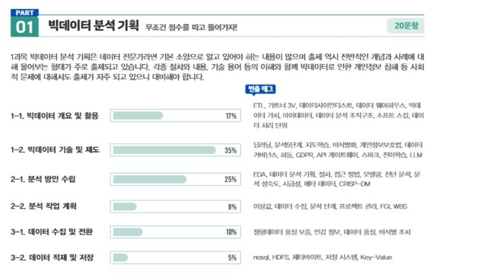
PART 02 빅데이터 탐색 개념을 이해하고 통계 문제에 대비하자! 20문항
2과목 빅데이터 탐색은 기초 통계의 수학적 이해를 요구합니다. 계산 문제가 매회 2~3 문제씩 출제되나 그 난이도는 높지 않으므로 개념 이해를 통해 다양한 유형의 출제에 대비하는 것이 좋습니다. 데이터 탐색에 응용되는 다양한 개념들과 각종 기술/추론 통계를 모두 꼼꼼히 공부하여 점수를 놓치지 않도록 준비하세요.
| 단원 | 출제 비중 | 빈출 태그 |
|---|---|---|
| 1-1. 데이터 정제 | 데이터 정제, 이상치 판단, 결측값 대치 | |
| 1-2. 분석 변수 처리 | 변수 선택, 파생 변수 생성, 학습데이터 불균형, 차원의 저주, 군집 불균형, 차원 축소, 변수 변환, 원-핫 인코딩, 오버샘플링 | |
| 2-1. 데이터 탐색 기초 | 박스플롯, 산점도, 상관계수, median, 표본 추출, 왜도, 기초통계량, 이상치 | |
| 2-2. 고급 데이터 탐색 | 주성분분석, 비정형데이터, 요인분석, 텍스트 마이닝, 시공간 데이터 | |
| 3-1. 기술통계 | 전수조사, 불량률, 확률 계산, 확률분포, 포아송분포, 정규분포, 중심극한정리, 군집추출, 층화추출, 카이제곱, 확률밀도함수, 베이즈 정리 | |
| 3-2. 추론통계 | 최대우도, Z 계산, 점추정, 1종/2종 오류, 유의수준, 표본분산 |
원문 이미지 보기
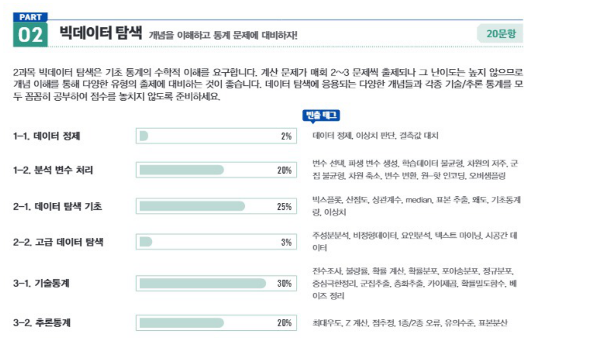
PART 03 빅데이터 모델링 분석 기법의 주요 포인트를 파악하자! 20문항
3과목 빅데이터 모델링은 분석 기법에 대한 심도 있는 내용과 본 자격증의 핵심 내용을 모두 담은 중요한 과목입니다. 모델의 특징을 이해해야 풀 수 있는 문제가 많이 출제되며, 다양한 응용 알고리즘에 대한 학습도 필요합니다. 과목의 특성상 방대한 범위에서 출제가 이뤄지기 때문에 고득점이 쉽지 않은 과목이므로 반복 학습은 필수입니다.
| 단원 | 출제 비중 | 빈출 태그 |
|---|---|---|
| 1-1. 분석 절차 수립 | 모델링 절차, 분석 시나리오, 가설검정 | |
| 1-2. 분석 환경 구축 | K-fold 검정, 데이터 분할, 과대적합 | |
| 2-1. 분석기법 | 변수 선택, 인공신경망, 합성곱 계층, 잔차진단, SVM, LASSO, Ridge, 로지스틱 회귀, 앙상블, 비지도학습, 지도학습-분류, 군집분석, 회귀분석, 활성화함수, 의사결정나무, DNN, CNN, RNN, 초매개변수, GAN, 드롭아웃, 연관성분석 | |
| 2-2. 고급 분석기법 | 자료 분석, 다차원 척도, 베이즈 정리, 시계열 자료, 자기상관, 비정형 데이터 형태, 랜덤 포레스트, 비모수적 통계 검정법, 보팅, 배깅, 부스팅, ARIMA, 앙상블 |
원문 이미지 보기
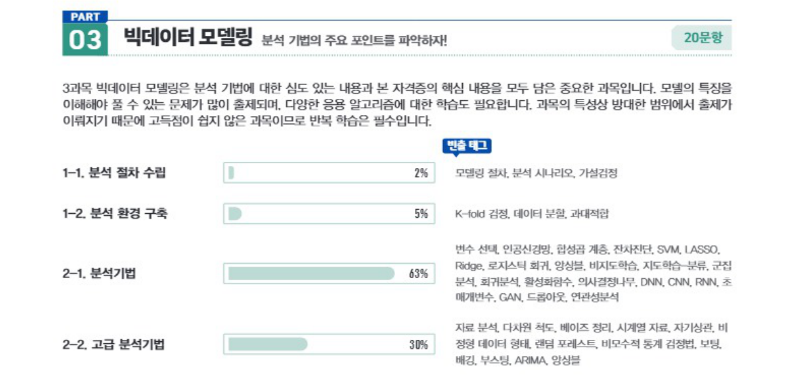
PART 04 빅데이터 결과 해석 비교적 어렵지 않으므로 고득점을 노려보자! 20문항
4과목 빅데이터 결과 해석은 검정, 진단, 모형 선택, 시각화에 관한 문제가 출제되고 있습니다. 각종 지표와 혼동행렬 관련 문제는 매회 여러 문제가 출제되고 있으므로 꼭 확실히 이해해야 합니다. 차트별 특징, 어떻게 해석할 것인지에 대해 비교적 어렵지 않게 출제되므로 고득점을 노려보세요.
| 단원 | 출제 비중 | 빈출 태그 |
|---|---|---|
| 1-1. 분석모형 평가 | 편향, 분산, 혼동 행렬, ROC, F1 score, 적합도 검정, 정밀도, 민감도, 특이도, 모형 진단, 잔차 진단, 정규성 가정, 홀드아웃, k-폴드 교차검증 | |
| 1-2. 분석모형 개선 | 초매개변수, 모형 선택, 매개변수 최적화, 가중치 감소 | |
| 2-1. 분석결과 해석 | MAE, MAPE, 선형회귀, ROC, 지지도, 신뢰도, 실루엣, 엘보우 | |
| 2-2. 분석결과 시각화 | 산점도, 막대그래프, 불균형 데이터셋, 인포그래픽, 버블차트, 카토그램, 히스토그램, 스타차트, 파레토 차트 | |
| 2-3. 분석결과 활용 | 모델링 타입, 분석결과의 활용, 성과지표, 분석모형 전개 |
원문 이미지 보기
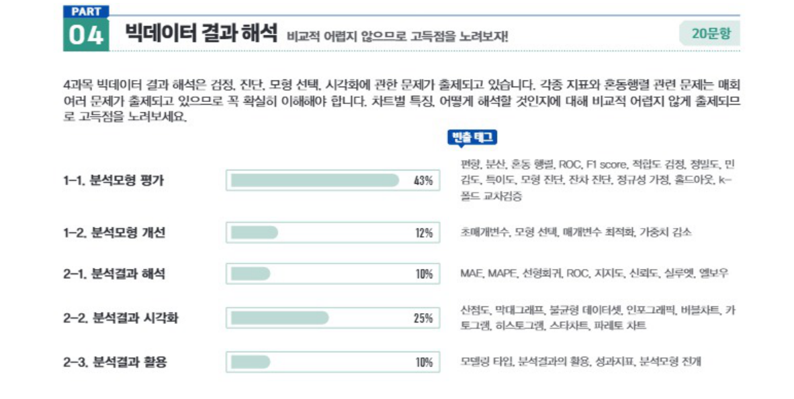
PART 01 빅데이터 분석 기획
분석 기획
1과목은 빅데이터와 분석에 대한 기본적 이해를 주로 다룹니다. 관련 기본 용어와 기술 및 제도에 대해 알아보고 분석, 수집 및 저장 계획을 수립하는 과정을 확인합니다. 다른 파트보다 방대할 수 있지만 이론적 정리를 통해 높은 점수를 목표로 공부하도록 합니다.
CHAPTER 01 빅데이터의 이해
빅데이터와 관련된 기술에 대해 공부해야 합니다. 단계별로 빅데이터가 어떻게 처리되는지, 또 어떤 요소를 중요시하며 사용되는 기술은 무엇이 있는지 확인하며 공부합니다.
개인정보와 비식별화도 시험에서 중요한 비중을 차지하니 고득점을 목표로 대비해야 합니다.
SECTION 01 빅데이터 개요 및 활용
빈출 태그 정량적 · 정성적 · 정형 · 반정형 · 비정형 · 데이터베이스 · DW · 빅데이터 · 데이터 사이언스
01 데이터와 정보
데이터는 1646년 영국 문헌에 처음 등장하였으며, ‘주어진 것’이란 의미를 갖는 라틴어 dare(주다, to give)의 과거분사형으로 사용되었다.
1) 데이터의 정의
- 데이터는 추론과 추정의 근거를 이루는 사실이다.
- 현실 세계에서 관찰하거나 측정하여 수집한 사실이다.
2) 데이터의 특징
- 단순한 객체로도 가치가 있으며 다른 객체와의 상호관계 속에서 더 큰 가치를 갖는다.
- 객관적 사실이라는 존재적 특성을 갖는다.
- 추론, 추정, 예측, 전망을 위한 근거로써 당위적 특성을 갖는다.
3) 데이터의 구분
- 정량적 데이터(Quantitative Data) : 주로 숫자로 이루어진 데이터이다.
예 2020년, 100km/h 등
- 정성적 데이터(Qualitative Data) : 문자와 같은 텍스트로 구성되며 함축적 의미를 지니고 있는 데이터이다.
예 철수가 시험에 합격하였다.
| 정량적 데이터 | 정성적 데이터 | |
|---|---|---|
| 유형 | 정형 데이터, 반정형 데이터 | 비정형 데이터 |
| 특징 | 여러 요소의 결합으로 의미 부여 | 객체 하나가 함축된 의미 내포 |
| 관점 | 주로 객관적 내용 | 주로 주관적 내용 |
| 구성 | 수치나 기호 등 | 문자나 언어 등 |
| 형태 | 데이터베이스, 스프레드시트 등 | 웹 로그, 텍스트 파일 등 |
| 위치 | DBMS, 로컬 시스템 등 내부 | 웹사이트, 모바일 플랫폼 등 외부 |
| 분석 | 통계 분석 시 용이 | 통계 분석 시 어려움 |
4) 데이터의 유형
- 정형 데이터(Structured Data) : 정해진 형식과 구조에 맞게 저장되도록 구성된 데이터이며, 연산이 가능하다.
예 관계형 데이터베이스의 테이블에 저장되는 데이터 등
- 반정형 데이터(Semi-structured Data) : 데이터의 형식과 구조가 비교적 유연하고, 스키마 정보를 데이터와 함께 제공하는 파일 형식의 데이터이며, 연산이 불가능하다.
예 JSON, XML, RDF, HTML 등
- 비정형 데이터(Unstructured Data) : 구조가 정해지지 않은 대부분의 데이터이며, 연산이 불가능하다.
예 동영상, 이미지, 음성, 문서, 메일 등
5) 데이터의 근원에 따른 분류
데이터의 수집과정은 데이터의 재생산 과정으로 볼 수 있으며, 원본 데이터로부터 재생산된 데이터는 가역 데이터와 불가역 데이터로 구분할 수 있다.
① 가역 데이터
생산된 데이터의 원본으로 일정 수준 환원이 가능한 데이터로 원본과 1:1 관계를 갖는다. 이력 추적이 가능하여, 원본 데이터가 변경되는 경우 변경사항을 반영할 수 있다.
② 불가역 데이터
생산된 데이터의 원본으로 환원이 불가능한 데이터이다. 원본 데이터와는 전혀 다른 형태로 재생산되기 때문에, 원본 데이터의 내용이 변경되었더라도 변경사항을 반영할 수 없다.
| 가역 데이터 | 불가역 데이터 | |
|---|---|---|
| 환원성(추적성) | 가능(비가공 데이터) | 불가능(가공 데이터) |
| 의존성 | 원본 데이터 그 자체 | 원본 데이터와 독립된 새 객체 |
| 원본과의 관계 | 1대1의 관계 | 1대N, N대1 또는 M대N의 관계 |
| 처리과정 | 탐색 | 결합 |
| 활용분야 | 데이터 마트, 데이터 웨어하우스 | 데이터 전처리, 프로파일 구성 |
6) 데이터의 기능
과학적 발견은 개인의 암묵적 지식에 기초하는 경우가 많으며, 이를 활용하려면 데이터를 기반으로 한 암묵지와 형식지의 상호작용이 중요하다.
- 암묵지 : 어떠한 시행착오나 다양하고 오랜 경험을 통해 개인에게 체계화되어 있으며, 외부에 표출되지 않은 무형의 지식으로 그 전달과 공유가 어렵다.
- 형식지 : 형상화된 유형의 지식으로 그 전달과 공유가 쉽다.
7) 지식창조 매커니즘
암묵지와 형식지 간 상호작용을 위한 일본의 경영학자 노나카 이쿠지로의 지식창조 매커니즘은 다음의 4단계로 구성된다.
- 공통화(Socialization) : 서로의 경험이나 인식을 공유하며 한 차원 높은 암묵지로 발전시킨다.
- 표출화(Externalization) : 암묵지가 구체화되어 외부(형식지)로 표현된다.
- 연결화(Combination) : 형식지를 재분류하여 체계화한다.
- 내면화(Internalization) : 전달받은 형식지를 다시 개인의 것으로 만든다.
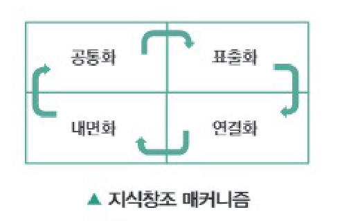
8) 데이터, 정보, 지식, 지혜
데이터, 정보, 지식, 지혜는 인간의 사회활동 속에서 가치창출을 위한 일련의 프로세스로 연결되어 기능한다.
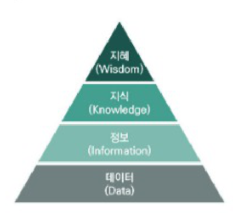
| 지혜 (Wisdom) | 축적된 지식을 통해 근본적인 원리를 이해하고 아이디어를 결합하여 도출한 창의적 산물이다. 예 다른 상품들도 온라인 쇼핑 시 오프라인 상점보다 저렴할 것이다. |
| 지식 (Knowledge) | 상호 연결된 정보를 구조화하여 유의미한 정보를 분류하고 개인적인 경험을 결합시켜 내재화한 고유의 결과물이다. 예 오프라인 상점보다 저렴한 온라인 쇼핑으로 노트북을 구매할 것이다. |
| 정보 (Information) | 데이터를 가공하거나 처리하여 데이터 간 관계를 분석하고 그 속에서 도출된 의미를 말하며, 항상 유용한 것은 아니다. 예 오프라인 상점보다 온라인 쇼핑 시 노트북 가격이 더 저렴하다. |
| 데이터 (Data) | 현실 세계에서 관찰하거나 측정하여 수집한 사실이나 값으로 개별 데이터로는 그 의미가 중요하지 않은 객관적인 사실이다. 예 온라인 쇼핑 시 노트북 가격은 100만 원이며, 오프라인 상점의 노트북 가격은 150만 원이다. |
- 데이터는 추론과 추정의 근거를 이루는 사실로, 단순한 객체로는 가치가 없고 다른 객체와의 상호관계 속에서 가치를 갖는다.
- 정량적 데이터는 정형 데이터이고, 정성적 데이터는 반정형 데이터와 비정형 데이터이다.
- 데이터는 추론과 추정의 근거를 이루는 사실로, 정량적 데이터와 정성적 데이터 모두 객관적 내용을 내포하고 있다.
- 데이터의 유형을 유연성을 기준으로 나열했을 때 비정형 데이터가 가장 유연하고, 정형 데이터는 유연성이 부족하다.
- 데이터는 단순한 객체로도 가치가 있으며 다른 객체와의 상호관계 속에서 더 큰 가치를 갖는다.
- 정량적 데이터는 정형 데이터와 반정형 데이터이고, 정성적 데이터는 비정형 데이터이다.
- 정량적 데이터는 주로 객관적 내용을, 정성적 데이터는 주로 주관적 내용을 내포하고 있다.
- 정형 데이터는 정해진 형식과 구조에 맞게 저장하여야 하지만, 반정형 데이터는 데이터의 형식과 구조가 비교적 유연하고, 비정형 데이터는 구조를 갖지 않은 경우가 대부분이다.
- 정형 데이터는 가역 데이터이며, 언제든지 환원 가능하다.
- 암묵지는 외부에 표출되지 않은 무형의 지식으로 그 전달과 공유가 어렵다.
- 서로의 경험이나 인식을 공유하며 한 차원 높은 암묵지로 발전시키는 과정을 연결화라 한다.
- 편의점보다 대형마트에서 구매할 때 아이스크림 가격이 더 저렴하다는 것은 데이터의 한 예이다.
- 데이터의 근원에 따라 분류했을 때 환원이 가능한 경우 가역 데이터, 그렇지 못한 경우 불가역 데이터라 하며, 데이터의 유형과 무관하게 비가공 데이터인 경우 가역 데이터, 가공이 이루어진 경우 불가역 데이터로 분류된다.
- 암묵지는 학습과 경험을 통하여 개인에게 체계화되어 있지만 겉으로 드러나지 않는 지식이다.
- 지식창조 메커니즘은 공통화, 표출화, 연결화, 내면화를 반복하며, 서로의 경험이나 인식을 공유하며 한 차원 높은 암묵지로 발전시켜 나가는 과정을 공통화라 하고, 연결화는 표출화를 통해 표현된 형식지를 재분류하여 체계화하는 과정이다.
- 데이터를 가공하거나 처리하여 데이터 간 관계를 분석하고 그 속에서 도출된 의미를 정보라 하며, 편의점보다 대형마트에서 아이스크림 가격이 더 저렴하다는 것은 정보의 한 예이다.
02 데이터베이스
데이터베이스(DataBase)라는 용어는 1963년 6월에 컴퓨터 중심의 데이터베이스 개발과 관리라는 주제로 미국 SDC(System Development Corporation)가 개최한 심포지엄에서 공식적으로 사용되었다.
1) 데이터베이스의 정의
- 체계적이거나 조직적으로 정리되고 전자식 또는 기타 수단으로 개별적으로 접근할 수 있는 독립된 저작물, 데이터 또는 기타 소재의 수집물이다.
- 데이터베이스는 소재를 체계적으로 배열 또는 구성한 편집물로서 개별적으로 그 소재에 접근하거나 그 소재를 검색할 수 있도록 한 것이다. (저작권법)
- 동시에 복수의 적용 업무를 지원할 수 있도록 복수 이용자의 요구에 대응해서 데이터를 받아들이고 저장, 공급하기 위하여 일정한 구조에 따라서 편성된 데이터의 집합이다.
- 문자, 기호, 음성, 화상, 영상 등 상호 관련된 다수의 콘텐츠를 정보 처리 및 정보통신 기기에 의하여 체계적으로 수집, 축적하여 다양한 용도와 방법으로 이용할 수 있도록 정리한 정보의 집합체이다.
2) 데이터베이스 관리 시스템(DataBase Management System, DBMS)
데이터베이스를 관리하며 응용 프로그램들이 데이터베이스를 공유하며 사용할 수 있는 환경을 제공하는 소프트웨어이다.
| 종류 | 설명 |
|---|---|
| 관계형 DBMS | 데이터를 열과 행을 이루는 테이블로 표현하는 모델이다. |
| 객체지향 DBMS | 정보를 객체 형태로 표현하는 모델이다. |
| 네트워크 DBMS | 그래프 구조를 기반으로 하는 모델이다. |
| 계층형 DBMS | 트리 구조를 기반으로 하는 모델이다. |
- SQL(Structured Query Language)
- 데이터베이스에 접근할 때 사용하는 언어이다.
- 단순한 질의 기능뿐만 아니라 데이터 정의와 조작 기능을 갖추고 있다.
- 테이블 단위로 연산을 수행하며 초보자들도 비교적 쉽게 사용 가능하다.
3) 데이터베이스의 특징
① 통합된 데이터(Integrated Data)
동일한 데이터가 중복되어 저장되지 않음을 의미한다.
- 데이터의 중복은 관리상 복잡하고 다양한 문제를 초래한다.
② 저장된 데이터(Stored Data)
컴퓨터가 접근할 수 있는 저장매체에 데이터를 저장한다.
③ 공용 데이터(Shared Data)
여러 사용자가 서로 다른 목적으로 데이터를 함께 이용한다.
- 일반적으로 대용량화되어 있고 구조가 복잡하다.
④ 변화되는 데이터(Changed Data)
데이터는 현시점의 상태를 나타내며 지속적으로 갱신된다.
- 갱신으로 변화하면서도 현재의 정확한 데이터를 유지해야 한다.
| 장점 | 단점 |
|---|---|
|
|
4) 데이터베이스의 활용
① OLTP(OnLine Transaction Processing)
호스트 컴퓨터와 온라인으로 접속된 여러 단말 간 처리 형태의 하나로 데이터베이스의 데이터를 수시로 갱신하는 프로세싱을 의미한다.
- 여러 단말에서 보내온 메시지에 따라 호스트 컴퓨터가 데이터베이스를 액세스하고, 바로 처리 결과를 돌려보내는 형태를 말한다.
- 현재 시점의 데이터만을 데이터베이스가 관리한다는 개념이다.
- 이미 발생된 트랜잭션에 대해서는 데이터값이 과거의 데이터로 다른 디스크나 테이프 등에 보관될 수 있다.
② OLAP(OnLine Analytical Processing)
정보 위주의 분석 처리를 하는 것으로, OLTP에서 처리된 트랜잭션 데이터를 분석해 제품의 판매 추이, 구매 성향 파악, 재무 회계 분석 등을 프로세싱하는 것을 의미한다.
- 다양한 비즈니스 관점에서 쉽고 빠르게 다차원적인 데이터에 접근하여 의사결정에 활용할 수 있는 정보를 얻을 수 있게 하는 기술이다.
| 구분 | OLTP | OLAP |
|---|---|---|
| 데이터 구조 | 복잡 | 단순 |
| 데이터 갱신 | 동적으로 순간적 | 정적으로 주기적 |
| 응답 시간 | 수 초 이내 | 수 초에서 몇 분 사이 |
| 데이터 범위 | 수 십일 전후 | 오랜 기간 저장 |
| 데이터 성격 | 정규적인 핵심 데이터 | 비정규적 읽기 전용 데이터 |
| 데이터 크기 | 수 기가바이트 | 수 테라바이트 |
| 데이터 내용 | 현재 데이터 | 요약된 데이터 |
| 데이터 특성 | 트랜잭션 중심 | 주제 중심 |
| 데이터 액세스 빈도 | 높음 | 보통 |
| 질의 결과 예측 | 주기적이며 예측 가능 | 예측하기 어려움 |
5) 데이터 웨어하우스(Data Warehouse, DW)★
사용자의 의사결정에 도움을 주기 위하여 기간시스템의 데이터베이스에 축적된 데이터를 공통의 형식으로 변환해서 관리하는 데이터베이스이다.
데이터 웨어하우스는 일정한 시간 동안의 데이터를 축적하고 의사결정을 위한 다양한 분석 작업을 수행한다.
| 특징 | 내용 |
|---|---|
| 주제지향성 (Subject-orientation) | 고객, 제품 등과 같은 중요한 주제를 중심으로 그 주제와 관련된 데이터들로 구성된다. |
| 통합성 (Integration) | 데이터가 데이터 웨어하우스에 입력될 때는 일관된 형태로 변환되며, 전사적인 관점에서 통합된다. |
| 시계열성 (Time-variant) | 데이터 웨어하우스의 데이터는 일정 기간 동안 시점별로 이어진다. |
| 비휘발성 (Non-volatilization) | 데이터 웨어하우스에 일단 데이터가 적재되면 일괄 처리 작업에 의한 갱신 이외에는 변경이 수행되지 않는다. |
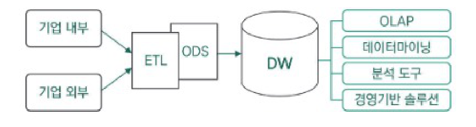
| 구성 요소 | 내용 |
|---|---|
| 데이터 모델 (Data Model) | 주제 중심적으로 구성된 다차원의 개체-관계형(Entity Relation) 모델로 설계된다. |
| ETL (Extract, Transform, Load) | 기업의 내부 또는 외부로부터 데이터를 추출, 정제 및 가공하여 데이터 웨어하우스에 적재한다. |
| ODS (Operational Data Store) | 다양한 DBMS 시스템에서 추출한 데이터를 통합적으로 관리한다. |
| DW 메타데이터 | 데이터 모델에 대한 스키마 정보와 비즈니스 측면에서 활용되는 정보를 제공한다. |
| OLAP (Online Analytical Processing) | 사용자가 직접 다차원의 데이터를 확인할 수 있는 솔루션이다. |
| 데이터마이닝 (Data Mining) | 대용량의 데이터로부터 인사이트를 도출할 수 있는 방법론이다. |
| 분석 도구 | 데이터마이닝을 활용하여 데이터 웨어하우스에 적재된 데이터를 분석할 수 있는 도구이다. |
| 경영기반 솔루션 | KMS, DSS, BI와 같은 경영의사결정을 지원하기 위한 솔루션이다. |
- 데이터베이스는 관련된 레코드의 집합이며, 이를 위한 소프트웨어를 데이터베이스 관리시스템이라 한다.
- SQL은 데이터베이스에 접근할 때 사용하는 언어이며, 데이터 정의와 조작이 가능하다.
- 데이터베이스는 통합된 데이터, 저장된 데이터, 공용 데이터 그리고 변화되는 데이터이다.
- OLTP는 조회 중심의 데이터베이스로 현재 시점의 데이터만을 관리한다는 개념이다.
- 데이터베이스는 동시에 복수의 적용 업무를 지원할 수 있도록 복수 이용자의 요구에 대응해서 데이터를 받아들이고 저장, 공급하기 위하여 일정한 구조에 따라서 편성된 데이터의 집합체이며, 이를 효율적으로 관리하기 위한 시스템을 DBMS라 한다.
- SQL은 단순한 질의뿐만 아니라 데이터 정의와 조작이 가능하며, 초보자들도 비교적 쉽게 사용 가능한 언어이다.
- 데이터베이스는 통합된 데이터(Integrated Data), 저장된 데이터(Stored Data), 공용 데이터(Shared Data), 변화되는 데이터(Changed Data)라는 특징이 있다.
- OLTP는 데이터 갱신 위주이고, OLAP는 데이터 조회 위주의 데이터베이스라 할 수 있다.
- 데이터만이 아닌 분석 방법까지도 포함하여 조직 내 의사결정을 지원하는 정보 관리 시스템이다.
- 주제 중심적이고, 각 주제별로 분리되어 있으며, 시계열 형태의 비휘발성 데이터이다.
- 데이터 웨어하우스를 구성하는 ETL은 데이터를 비즈니스 목적에 실질적으로 유용한 상태로 변환하는 엔드 투 엔드 프로세스이다.
- DW 메타데이터는 데이터 모델에 대한 스키마 정보 등을 제공한다.
- 데이터 웨어하우스는 사용자의 의사결정에 도움을 주기 위하여 기관시스템의 데이터베이스에 축적된 데이터를 공통의 형식으로 변환해서 관리하는 데이터베이스이다.
- 주제지향성, 통합성, 시계열성, 비휘발성이라는 특징을 갖고 있다.
- ETL은 기업의 내부 또는 외부로부터 데이터를 추출(Extract), 변환(Transform)하여 데이터 웨어하우스에 적재(Load)하는 과정이다.
- DW 메타데이터는 데이터 모델에 대한 스키마 정보와 비즈니스 측면에서 활용되는 정보를 제공한다.
03 빅데이터 개요
빅데이터는 기존 데이터보다 너무 방대하여 기존의 방법이나 도구로 수집/저장/분석 등이 어려운 정형 및 비정형 데이터들을 의미한다.
- 빅데이터는 일반적인 데이터베이스 소프트웨어로 저장, 관리, 분석할 수 있는 범위를 초과하는 규모의 데이터이다. (McKinsey, 2011)
- 빅데이터는 다양한 종류의 대규모 데이터로부터 저렴한 비용으로 가치를 추출하고 데이터의 초고속 수집, 발굴, 분석을 지원하도록 고안된 차세대 기술 및 아키텍처이다. (IDC, 2011)
- 빅데이터는 대용량 데이터를 활용해 작은 용량에서는 얻을 수 없었던 새로운 통찰이나 가치를 추출해 내며, 나아가 이를 활용해 시장과 기업 및 시민과 정부의 관계 등 많은 분야에 변화를 가져오는 것이다. (Mayer-Schonberger&Cukier, 2013)
1) 빅데이터의 등장과 변화
① 빅데이터의 등장 배경
디지털화, 저장 기술, 인터넷 보급, 모바일 혁명, 클라우드 컴퓨팅 등 관련 기술이 빠르게 발전하고 있다.
- 기업에서는 온·오프라인 고객 데이터가 많이 축적되면서 데이터에 숨어 있는 가치를 발굴해 새로운 성장동력으로 활용하고 있다.
- 학계에서는 인간 게놈 프로젝트, 기후 관찰 등 거대 데이터를 다루는 학문 분야가 확산되면서 필요한 기술 아키텍처 및 분석 기법들이 발전하고 있다.
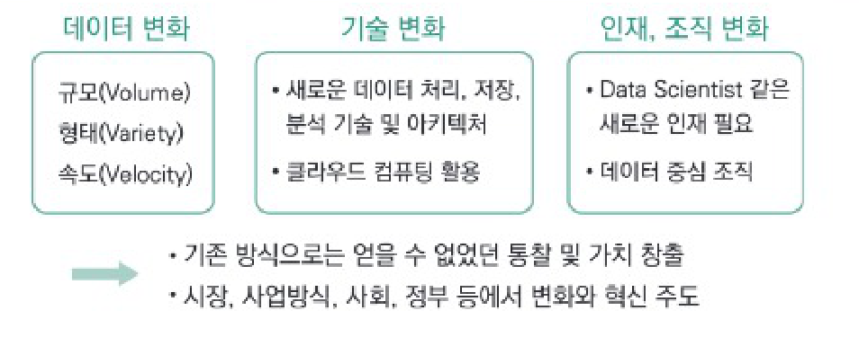
② 빅데이터의 등장으로 인한 변화
- 데이터 처리 시점이 사전 처리(pre-processing)에서 사후 처리(post-processing)로 이동하였다.
- 기존에 필요한 정보만 수집하는 시스템에서, 가능한 한 많은 데이터를 모으고 다양한 방식으로 조합하여 숨은 정보를 얻는 방식으로 변화
- 데이터 처리 범주가 표본조사에서 전수조사로 확대되었다.
- 기술 발전으로 인한 데이터 처리비용 감소로 표본조사가 아닌 전수조사를 통해 샘플링이 주지 못하는 패턴이나 정보를 발견하는 방식으로 변화
- 데이터의 가치 판단 기준이 질(quality)보다 양(quantity)으로 그 중요도가 달라졌다.
- 데이터의 지속적 추가는 양질의 정보가 오류 정보보다 많아 전체적으로 좋은 결과를 산출하는 데 긍정적인 영향을 미친다는 추론을 바탕으로 변화
- 데이터를 분석하는 방향이 이론적 인과관계 중심에서 단순한 상관관계로 변화되는 경향이 있다.
- 데이터 기반의 상관관계 분석으로 특정 현상의 발생 가능성을 포착하여 대응하는 방식으로 변화
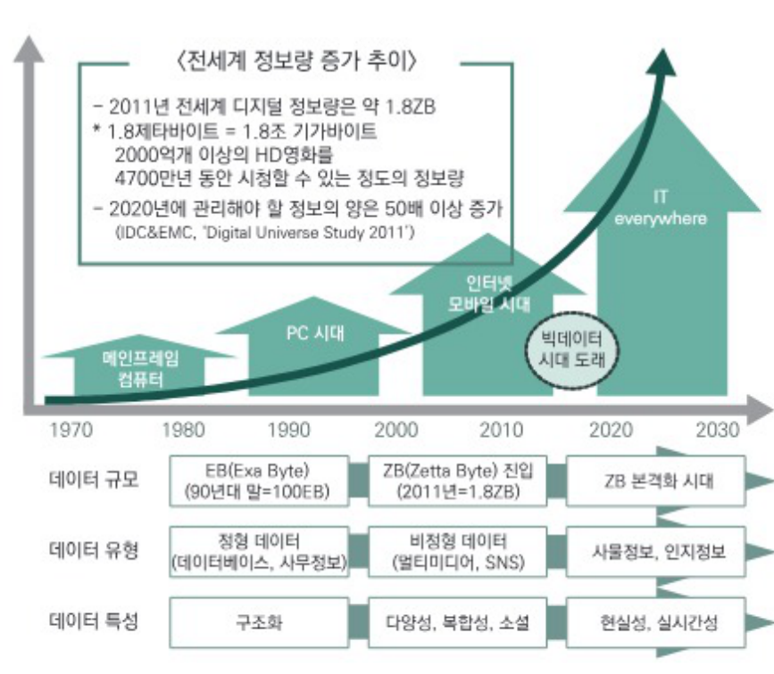
2) 빅데이터의 특징
빅데이터 용어가 사용된 초기에 가트너(Gartner) 그룹은 3V(규모, 유형, 속도)로 빅데이터의 특징을 설명했으며, 최근에는 빅데이터 분석을 통해 얻을 수 있는 가치와 데이터에 대한 품질의 중요성이 강조되고 있다.
| 광의 | 협의 | 특징 | 내용 |
|---|---|---|---|
| 5V | 3V | 규모(Volume) |
|
| 유형(Variety) |
| ||
| 속도(Velocity) |
| ||
| +2V | 품질(Veracity) |
|
|
| 가치(Value) |
|
| 전통적 데이터 | 빅데이터 | |
|---|---|---|
| 규모 | 기가바이트(GB) 이하 | 테라바이트(TB) 이상 |
| 처리단위 | 시간 또는 일 단위 처리 | 실시간 처리 |
| 유형 | 정형 데이터 | 정형+반정형, 비정형 데이터 |
| 처리방식 | 중앙집중식 처리 | 분산 처리 |
| 시스템 | Relational DBMS | Hadoop, HDFS, Hbase, NoSQL 등 |
3) 빅데이터의 활용
| 구성 요소 | 내용 |
|---|---|
| 자원(Resource) [빅데이터] |
|
| 기술(Technology) [빅데이터플랫폼, AI] |
|
| 인력(People) [알고리즈미스트, 데이터사이언티스트] |
|
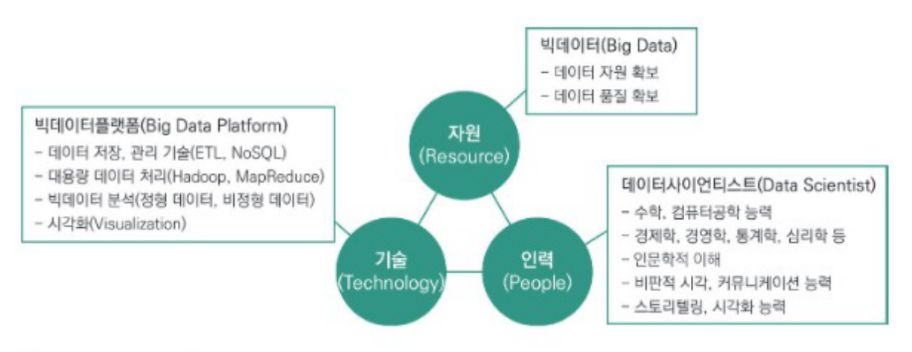
| 테크닉 | 설명 | 예시 |
|---|---|---|
| 연관규칙학습 | 변인들 간 주목할 만한 상관관계가 있는지 찾아내는 방법 | 도시락을 구매하는 사람이 음료수를 더 많이 구매하는가? |
| 유형분석 | 문서를 분류하거나 조직을 그룹화할 때 사용 | 이것은 어떤 특성을 가진 집단에 속하는가? |
| 유전 알고리즘 | 최적화가 필요한 문제를 생물 진화의 과정을 모방하여 점진적으로 해결책을 찾는 방법 | 시청률을 최고치로 하기 위해 어떤 프로그램을 어떤 시간에 방송해야 하는가? |
| 기계학습 | 데이터로부터 학습한 알려진 특성을 활용하여 예측 | 시청 기록을 바탕으로 어떤 영화를 가장 보고 싶어하는가? |
| 회귀분석 | 독립변수가 종속변수에 미치는 영향을 분석할 때 사용 | 경력과 학력이 연봉에 미치는 영향은? |
| 감정분석 | 특정 주제에 대해 말을 하거나 글을 쓴 사람의 감정을 분석 | 새로운 할인 정책에 대한 고객의 평은 어떤가? |
| 소셜네트워크 (사회관계망)분석 | 특정인과 다른 사람의 관계를 파악하고 영향력 있는 사람을 분석할 때 사용 | 고객들 간 관계망은 어떻게 구성되는가? |
- 데이터 처리 범주가 표본조사에서 전수조사로 확대되었다.
- 가트너 그룹은 3V(규모, 유형, 속도)로 빅데이터의 특징을 설명하였다.
- 빅데이터를 활용하기 위한 3요소로 자원, 기술, 인력이 필요하며, 그 중 자원은 빅데이터와 플랫폼으로 구성된다.
- 빅데이터 활용을 위한 방법들로는 연관규칙분석, 기계학습, 회귀분석 등이 존재한다.
- 기술 발전으로 인한 데이터 처리비용 감소로 표본조사가 아닌 전수조사를 통해 패턴이나 정보를 발견하는 방식으로 변화되었다.
- 빅데이터는 규모(Volume)면에서 대용량화, 유형(Variety)면에서 다양화, 속도(Velocity)면에서 고속화된 특징을 갖고 있다.
- 빅데이터 활용을 위한 3요소로 자원(빅데이터), 기술(빅데이터플랫폼, AI), 인력(알고리즈미스트, 데이터 사이언티스트)이 필요하다.
- 빅데이터 활용을 위한 기본 테크닉으로 연관규칙분석, 유형분석, 유전 알고리즘, 기계학습, 회귀분석, 감정분석, 소셜네트워크분석 등이 있다.
04 빅데이터의 가치
| 기관명 | 경제적 효과 |
|---|---|
| Economist(2010) | 데이터는 자본이나 노동력과 거의 동등한 레벨의 경제적 투입자본으로 비즈니스의 새로운 원자재 역할을 한다. |
| MIT Sloan(2010) | 데이터 분석을 잘 활용하는 조직일수록 차별적 경쟁력을 갖추고 높은 성과를 창출한다. |
| Gartner(2011) | 데이터는 21세기의 원유이며 미래 경쟁 우위를 결정한다. 기업은 다가올 데이터 경제시대를 이해하고 정보고립을 경계해야 한다. |
| McKinsey(2011) | 빅데이터는 혁신, 경쟁력, 생산성의 핵심요소이다. |
1) 빅데이터의 기능과 효과
- 빅데이터는 이를 활용하는 기존 사업자에게 경쟁 우위를 제공한다.
- 새롭게 시장에 진입하려는 잠재적 경쟁자에게는 진입장벽과도 같다.
- 고객 세분화와 맞춤형 개인화 서비스를 제공할 수 있다.
- 시뮬레이션을 통한 수요 포착과 변수 탐색으로 경쟁력을 강화하고, 비즈니스 모델이나 제품 또는 서비스의 혁신을 가져온다.
- 빅데이터는 알고리즘 기반으로 의사결정을 지원하거나 이를 대신한다.
- 빅데이터는 투명성을 높여 R&D 및 관리 효율성을 제고한다.
2) 빅데이터의 가치 측정의 어려움
특정 데이터의 가치는 그 데이터의 활용 및 가치 창출 방식과 분석 기술의 발전 여부 등에 따라 달라질 수 있어 이를 측정하고 판단하는 것은 쉽지 않다.
- 데이터 활용 방식 : 데이터를 재사용하거나 재결합, 다목적용 데이터 개발 등이 일반화되면서 특정 데이터를 누가, 언제, 어디서 활용할지 알 수 없기에 그 가치를 측정하기 어렵다.
- 가치 창출 방식 : 데이터는 어떠한 목적을 갖고서 어떻게 가공하는가에 따라 기존에 없던 가치를 창출할 수도 있어 사전에 그 가치를 측정하기 어렵다.
- 분석 기술 발전 : 데이터는 지금의 기술 상황에서는 가치가 없어 보일지라도 새로운 분석 기법이 등장할 경우 큰 가치를 찾아낼 수 있으므로 당장 그 가치를 측정하기 어렵다.
- 데이터 수집 원가 : 데이터는 달성하려는 목적에 따라 수집하거나 가공하는 비용이 상황에 따라 달라질 수 있어 그 가치를 측정하기 어렵다.
3) 빅데이터의 영향
- 기업에게 혁신과 경쟁력 강화, 생산성 향상의 근간이 된다.
- 빅데이터를 활용해 소비자의 행동을 분석하고 시장 변동을 예측해 비즈니스 모델을 혁신하거나 신사업을 발굴한다.
- 정부에게 환경 탐색과 상황 분석, 미래 대응 수단을 제공한다.
- 기상, 인구이동, 각종 통계, 법제 데이터 등을 수집해 사회 변화를 추정하여 관련 정보를 추출한다.
- 개인에게 활용 목적에 따라 스마트화를 통해 영향을 준다.
- 빅데이터를 서비스하는 기업이 많아지고 데이터 분석 비용은 지속적으로 하락하여 활용이 용이해졌다.
- 빅데이터는 이를 활용하는 사업자에게 경쟁우위를 제공한다.
- 빅데이터는 다양한 개발자들에게 사업 기회를 주는 플랫폼의 역할을 한다.
- 빅데이터는 가치를 측정하는데 어려움이 있다.
- 빅데이터는 기업이나 정부에게는 영향을 미치지만 개인에게는 별다른 영향을 미치지 않는다.
- 빅데이터는 잠재적 경쟁자에게 진입장벽과도 같다.
- 빅데이터는 4차 산업혁명시대의 석탄이나 철, 원유와 같은 역할을 한다.
- 특정 데이터의 가치는 그 데이터의 활용 및 가치 창출 방식과 분석 기술의 발전 여부 등에 따라 달라질 수 있어 이를 측정하고 판단하는 것은 쉽지 않다.
- 빅데이터는 개인에게 활용 목적에 따라 스마트화를 통해 영향을 준다.
05 데이터 산업의 이해
1) 데이터 산업의 진화
데이터 산업은 데이터 처리 – 통합 – 분석 – 연결 – 권리 시대로 진화하고 있다.
- 데이터 통합 시대까지 데이터의 역할은 거래를 정확하게 기록하고 거래의 자동화를 지원하는 것이었다. 데이터 분석 수준이 향상되면서 데이터의 자원 활용이 가능해졌다.
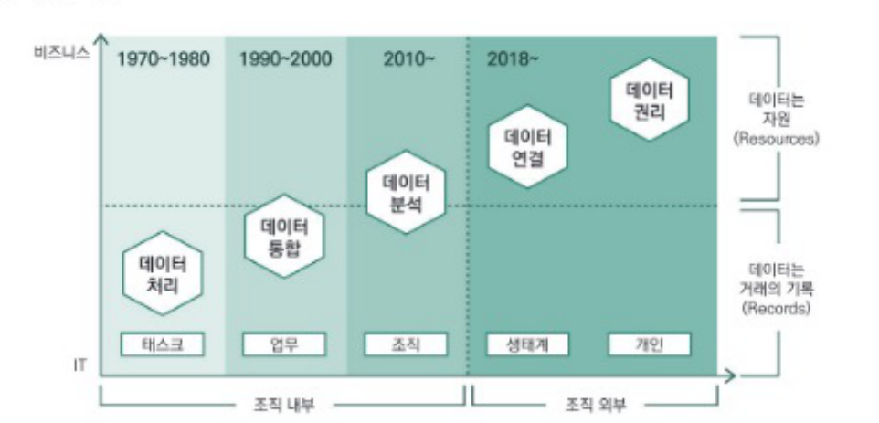
① 데이터 처리 시대
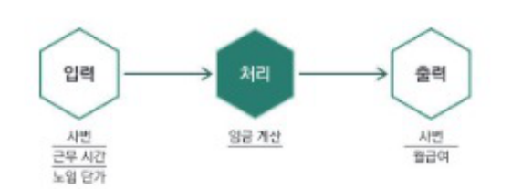
- 컴퓨터 프로그래밍 언어를 이용하여 대규모 데이터를 빠르고 정확하게 처리할 수 있게 되었으며 결과는 파일 형태로 보관되었다.
- 기업들은 EDPS(Electronic Data Processing System)를 도입하여 급여 계산, 회계 전표 처리 등의 업무에 적용하였다.
- 데이터는 업무 처리의 대상으로 새로운 가치를 제공하지는 않았다.
② 데이터 통합 시대
- 데이터 처리가 여러 업무에 적용되기 시작하면서 데이터가 쌓이기 시작했고 전사적으로 데이터 일관성을 확보하기가 어려워졌다.
- 데이터 모델링과 데이터베이스 관리 시스템이 등장했다.
- 데이터 조회와 보고서 산출, 원인 분석 등을 위해 데이터 웨어하우스가 도입되었다.
③ 데이터 분석 시대
- 대부분 업무에 정보기술이 적용되고, 모바일 기기 보급, 공정센서 확대, 소셜 네트워크 이용 확산 등으로 인해 데이터가 폭발적으로 증가했다.
- 대규모 데이터를 보관하고 관리할 수 있는 하둡, 스파크 등의 빅데이터 기술이 등장했다.
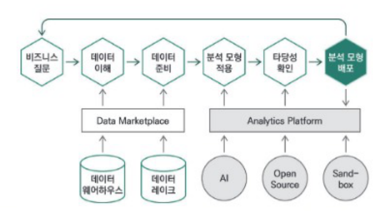
- 데이터를 학습하여 전문가보다도 정확한 의사결정을 빠르게 내릴 수 있는 인공지능 기술도 상용화되었다.
- 데이터를 분석하여 사실들의 인과관계를 밝힐 수 있고, 이를 업무에 적용하면 의사결정의 연관성과 기민성을 높일 수 있다는 점이 다양한 사례로 증명되었다.
- 데이터 소비자(Data Consumer)의 역할과 활용 역량을 높이기 위한 데이터 리터러시(Data Literacy) 프로그램의 중요성도 커지고 있다.
④ 데이터 연결 시대
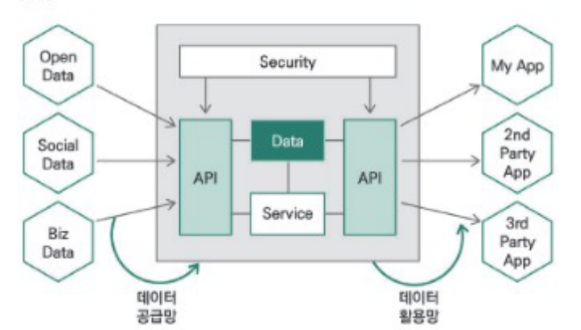
- 기업 또는 기관, 사람, 사물 등 모든 것이 항상 그리고 동시에 둘 이상의 방식으로 연결되어 데이터를 주고받는다.
- 연결은 네트워크를 만들고, 네트워크는 새로운 비즈니스 모델을 탄생시킨다.
- 디지털 경제의 주축 세력인 디지털 원주민은 융합된 서비스를 원한다.
- 융합된 서비스를 제공하기 위해서는 다양한 기업들의 서비스 연결이 필요하고, 이는 기업 간 데이터로 연결되어야 한다.
- 데이터 경제의 데이터 연결을 강조하는 의미에서, 오픈 API 경제라는 용어가 사용되기도 한다. 또한, 오픈 API 제공 수 및 접속 수, 오픈 API로 연결된 외부 실체 수 등이 기업의 지속가능성과 성장성을 확인할 수 있는 지표가 되기도 한다.
- 현재 오픈 API를 제공하는 것은 해당 기업의 자율적 판단에 달려 있지만, 점차 의무화되는 추세이다.
⑤ 데이터 권리 시대
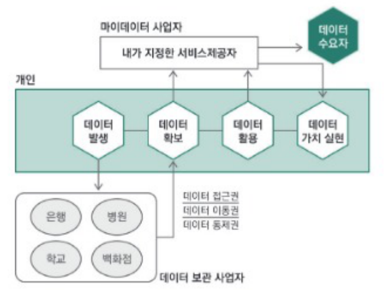
- 개인이 자신의 데이터를 자신을 위해서 사용한다.
- 데이터의 원래 소유자인 개인이 자신의 데이터에 대한 권리를 보유하고 있으며 스스로 행사할 수 있어야 한다는 마이데이터(My Data)가 등장하였다.
- 데이터 권리를 개인이 갖게 된다는 것은 산업이 데이터를 중심으로 재편될 수 있다는 뜻이다.
- 데이터는 기본적으로 거래 행위의 부산물이었다. 기업들은 개인과 거래를 하는 과정에서 개인의 데이터가 있어야 했고, 이를 확보하였지만 몇 가지 문제(유출, 미동의 활용, 데이터의 산재)를 일으켰다.
- 개인의 데이터를 관리해 줄 수 있는 서비스와 필요한 수요자에게 데이터를 팔아 주는 서비스가 나타날 수 있다.
- 개인은 스스로 데이터를 만들고 자신이 만든 데이터를 기반으로 하는 비즈니스 모델을 구상할 수 있다.
- 기존 기업들은 개인 데이터 사용에 제약을 받게 됨으로써 고객 접점을 상실하게 될 수 있다.
- 데이터의 공정한 사용이 보장되어야 하며, 데이터 독점이 유발할 수 있는 경제 독점이 방지되어야 한다.
2) 데이터 산업의 구조
① 인프라 영역
- 데이터 수집, 저장, 분석, 관리 등의 기능을 담당한다.
- 컴퓨터나 네트워크 장비 및 스토리지 같은 하드웨어 영역이 있다.
- 데이터를 관리하고 분석하기 위한 소프트웨어 영역이 있다.
② 서비스 영역
- 데이터를 활용하기 위한 교육이나 컨설팅 또는 솔루션을 제공한다.
- 데이터 그 자체를 제공하거나 이를 가공한 정보를 제공한다.
- 데이터를 처리하는 역할을 담당하기도 한다.
- 데이터 처리 시대에는 데이터가 업무 처리의 대상으로 새로운 가치를 제공하였다.
- 데이터 통합 시대에는 데이터 모델링과 데이터베이스 관리 시스템이 등장하였다.
- 데이터 분석 시대에는 대규모 데이터를 보관하고 관리할 수 있는 빅데이터 기술이 등장하였다.
- 데이터 권리 시대에는 개인이 자신의 데이터를 자신을 위해서 사용하게 되었다.
- 데이터 처리 시대의 데이터는 업무 처리의 대상으로 새로운 가치를 제공하지는 않았다.
- 데이터 통합 시대에는 전사적으로 데이터 일관성을 확보하기 위해 데이터 모델링과 DBMS를 도입하기 시작하였다.
- 데이터 분석 시대에는 하둡, 스파크 등 빅데이터 기술과 의사결정을 빠르고 정확하게 내릴 수 있는 인공지능 기술이 상용화되었다.
- 데이터 권리 시대에는 데이터 원래 소유자인 개인이 자신의 데이터에 대한 권리를 보유하고 있으며 스스로 행사할 수 있어야 한다는 마이데이터(My Data)가 등장하였다.
06 빅데이터 조직 및 인력
기업의 경쟁력 확보를 위해 비즈니스 질문을 도출하고, 이를 충족하기 위한 가치를 발굴하며, 비즈니스를 최적화하기 위하여 빅데이터 조직 및 인력 구성 방안을 수립한다.
1) 필요성
- 빅데이터와 관련된 기술적인 문제들은 기술의 발전으로 어느 정도 해소되었다.
- 데이터 분석 및 활용을 위한 조직체계나 분석 전문가 확보에 어려움이 있다.
- 데이터 분석 관점의 컨트롤 타워에 대한 필요성이 제기되고 있다.
2) 조직의 역할
- 전사 및 부서의 분석 업무를 발굴한다.
- 전문적인 분석 기법과 도구를 활용하여 빅데이터 속에서 인사이트를 찾아낸다.
- 발견한 인사이트를 전파하고 이를 실행한다.
3) 조직의 구성
통계학이나 분석 방법에 대한 지식과 분석 경험이 있는 전문인력을 중심으로 전사 또는 특정 부서 내 조직으로 구성하여 운영한다.
① 조직 구성을 위한 체크리스트
- 비즈니스 질문을 선제적으로 찾아낼 수 있는 구조인가?
- 분석 전담조직과 타 부서 간 유기적인 협조와 지원이 원활한 구조인가?
- 효율적인 분석 업무를 수행하기 위한 분석 조직의 내부 조직구조는?
- 전사 및 단위부서가 필요시 접촉하며 지원할 수 있는 구조인가?
- 어떤 형태의 조직(집중형, 기능형, 분산형)으로 구성하는 것이 효율적인가?
② 인력 구성을 위한 체크리스트
- 비즈니스 및 IT 전문가의 조합으로 구성되어야 하는가?
- 어떤 경험과 어떤 스킬을 갖춘 사람으로 구성해야 하는가?
- 통계적 기법 및 분석 모델링 전문 인력을 별도로 구성해야 하는가?
- 전사 비즈니스를 커버하는 인력이 없다면?
- 전사 분석업무에 대한 적합한 인력 규모는 어느 정도인가?
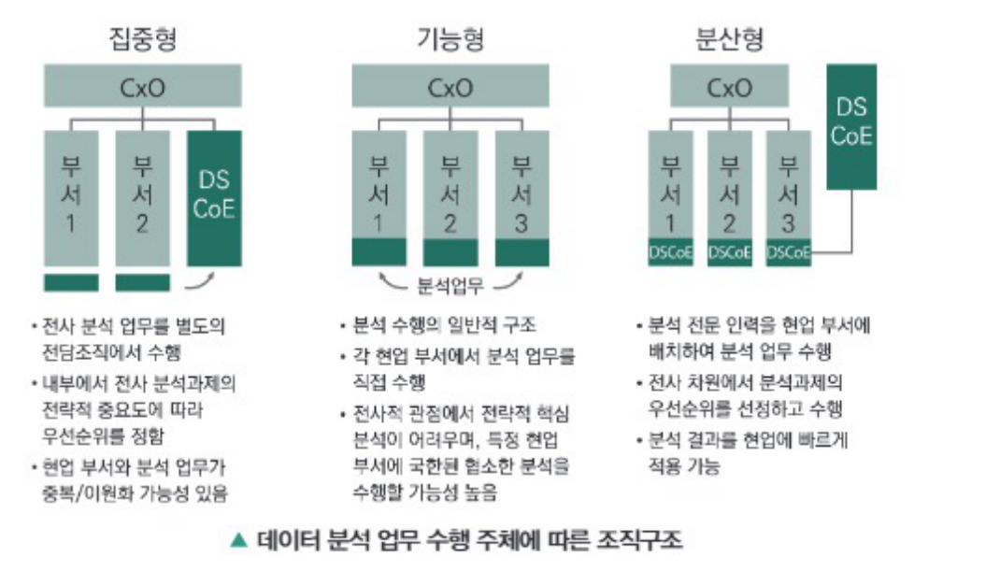
③ 구성 인력과 필요역량
- 비즈니스를 이해하고 있는 인력
- 분석에 필요한 컴퓨터공학적인 기술을 이해하고 있는 인력
- 통계를 이용한 다양한 분석기법을 활용할 수 있는 분석 지식을 갖춘 인력
- 조직 내 분석 문화 확산을 위한 변화 관리 인력
- 분석조직뿐 아니라 관련 부서 조직원의 분석 역량 향상을 위한 교육담당 인력
(출처 : 데이터분석전문가가이드, 한국데이터진흥원)
4) 데이터 사이언스 역량
데이터 사이언스는 정형, 비정형 형태를 포함한 다양한 데이터로부터 지식과 인사이트를 추출하는 데 과학적 방법론, 프로세스, 알고리즘, 시스템을 동원하는 융합분야이다.
- 데이터 사이언스는 데이터를 통해 실제 현상을 이해하고 분석하는 데 필요한 통계학, 데이터 분석, 기계학습과 연관된 방법론을 통합하는 개념으로 정의되기도 한다.
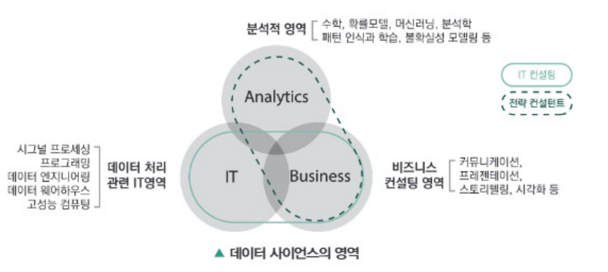
① 데이터 사이언스의 기능
- 비즈니스 성과를 좌우하는 핵심이슈에 답할 수 있다.
- 사업의 성과를 견인해 나갈 수 있다.
② 데이터 사이언스 실현을 위한 인문학적 요소
- 스토리텔링 능력
- 커뮤니케이션 능력
- 창의력과 직관력
- 비판적 시각과 열정
③ 데이터 사이언스의 한계
- 분석 과정에서 가정과 같이 인간의 해석이 개입되는 단계가 불가피하다.
- 분석 결과를 바라보는 사람에 따라 서로 다른 해석과 결론을 내릴 수 있다.
- 아무리 정량적인 분석이라 할지라도 모든 분석은 가정에 근거한다.
5) 데이터 사이언티스트
데이터에 대한 이론적 지식과 숙련된 분석 기술을 바탕으로 통찰력과 전달력 및 협업 능력을 갖춘 데이터 분야 전문가이다.
- 데이터의 다각적 분석을 통해 인사이트를 도출하고 이를 조직의 전략 방향 제시에 활용할 수 있는 기획자이기도 하다.
- 문제를 집중적으로 파고들어 질문을 찾고, 검증 가능한 가설을 세워야 한다.
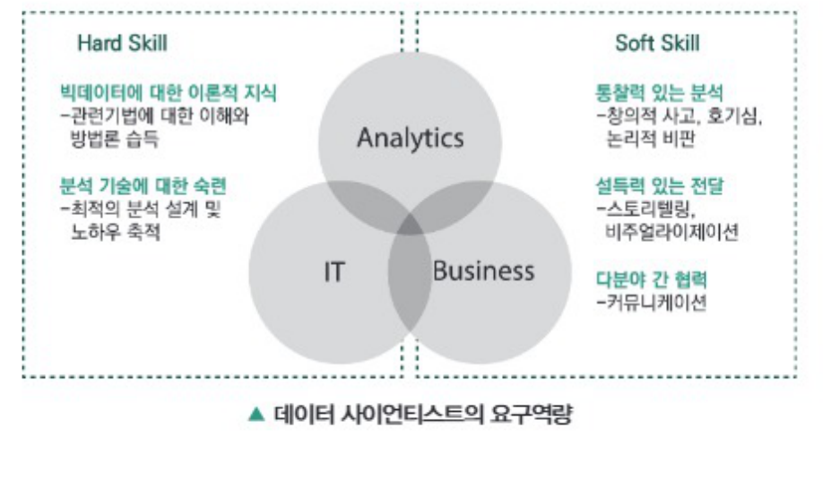
- 전문인력을 중심으로 전사 또는 특정 부서 내 조직으로 구성한다.
- 집중형, 기능형, 분산형 형태의 조직으로 구성할 수 있다.
- 조직원의 분석 역량 향상을 위한 교육담당 인력도 필요하다.
- 기능형 조직의 경우 분석전담조직이 필요하지만, 분산형 조직은 필요치 않다.
- 통계학이나 분석 방법에 대한 지식과 분석 경험이 있는 분석인력을 중심으로 전사 또는 특정 부서 내 조직으로 구성하여 운영한다.
- 전사 분석 업무를 별도의 전담조직에서 수행하는 집중형, 각 현업 부서에서 분석 업무를 직접 수행하는 기능형, 분석 전문 인력을 현업 부서에 배치하여 분석 업무를 수행하는 분산형 조직으로 구성할 수 있다.
- 분석조직뿐 아니라 관련 부서 조직원의 분석 역량 향상을 위한 교육담당 인력도 필요하다.
- 분석전담조직(DSCoE: Data Science Center of Excellence)은 집중형, 분산형 조직에서는 필요하지만, 기능형 조직에서는 필요하지 않다.
- 아무리 정량적인 분석이라 할지라도 모든 분석은 가정에 근거한다.
- 분석 과정에서 가정과 같이 인간의 해석이 개입되는 단계가 불가피하다.
- 분석 결과를 바라보는 사람에 따라 서로 다른 해석과 결론을 내릴 수 있다.
- 데이터에서 상관관계를 발견하더라도 인과관계를 찾아내지 못한다면 신뢰할 수 없다.
- 연관성분석과 같이 데이터 분석을 통해 발견되는 패턴만으로도 충분히 의미를 가지는 경우도 있으며, 반드시 인과관계를 찾아내야만 데이터 분석 결과를 신뢰할 수 있는 것은 아니다.
- 관련 기법에 대한 이해
- 통찰력 있는 분석
- 분석 기술에 대한 숙련
- 빅데이터에 대한 이론적 지식
- 소프트 스킬은 통찰력 있는 분석, 설득력 있는 전달, 다분야 간 협력을 말하며, 하드 스킬은 빅데이터에 대한 이론적 지식과 분석 기술에 대한 숙련을 말한다.
합격을 다지는 예상문제
- 데이터는 일반적으로 정형, 비정형, 반정형 데이터로 구분된다.
- 비정형 데이터는 텍스트, 음성, 영상 등 특수한 데이터이다.
- 정형 데이터는 흔히 볼 수 있는 주로 숫자로 구성된 데이터이다.
- 정형 데이터는 비정형 데이터보다 품질이 우수하며 다양한 분석이 가능하다.
- 대통령에 대한 국민들의 인식
- 서울에서 제주까지 비행시간
- 한국인의 평균 수명
- 국내 인구 증가율
- XML File
- JSON File
- TEXT File
- HTML File
- 동영상
- 이미지
- 음성
- 전화번호
- 적정성
- 일관성
- 관련성
- 적시성
- 데이터 → 정보 → 지식 → 지혜
- 데이터 → 정보 → 지혜 → 지식
- 데이터 → 지혜 → 정보 → 지식
- 데이터 → 지식 → 지혜 → 정보
- 표출화(Externalization)
- 내면화(Internalization)
- 통합화(Integration)
- 공통화(Socialization)
- 주제지향성(Subject-orientation)
- 휘발성(Volatilization)
- 통합성(Integration)
- 시계열성(Time-variant)
- 데이터 모델(Data Model)
- 데이터 전처리(Data Pre-processing)
- ETL(Extract, Transform, Load)
- ODS(Operational Data Store)
- 다양성
- 대용량성
- 신속성
- 일관성
- 마케팅 효과 극대화
- 제품 생산 비용 절감
- 비즈니스 의사결정의 고도화
- 고객 개인정보 활용을 통한 통제
- 자원, 인력, 프로세스
- 자원, 기술, 인력
- 기술, 인력, 프로세스
- 자원, 기술, 프로세스
- 사전처리에서 사후처리로 변화
- 인과관계에서 상관관계로 변화
- 전수조사에서 표본조사로 변화
- 데이터의 질보다 양의 중요도 증가
- 빅데이터는 투명성을 높여 R&D 및 관리 효율성을 제고한다.
- 빅데이터는 시뮬레이션을 통한 수요 포착과 변수 탐색으로 경쟁력을 강화한다.
- 빅데이터는 고객 세분화와 맞춤형 개인화 서비스를 통해 마케팅 비용이 발생하지 않게 한다.
- 빅데이터는 비즈니스 모델이나 제품 또는 서비스의 혁신을 가져온다.
- 데이터 재사용이 일반화되며 특정 데이터를 누가 언제 사용했는지 알기 어렵다.
- 분석 기술의 발전으로 과거에는 불가능했던 데이터 분석이 가능해졌다.
- 한정된 곳에서 데이터가 활용되고 있다.
- 기존에 존재하지 않던 새로운 가치를 창출한다.
- 서비스, 솔루션
- 서비스, 컨설팅
- 인프라, 서비스
- 인프라, 컨설팅
- 데이터 활용 교육
- 데이터 처리 제공
- 데이터 기반 컨설팅
- 도출된 인사이트 기반의 새로운 아이디어 제공
- 전사 분석 업무를 별도의 분석 전담조직에서 수행한다.
- 분석 결과를 현업에 빠르게 적용할 수 있다.
- 현업 부서의 분석 업무와 이원화될 가능성이 높다.
- 전략적 중요도에 따라 분석조직이 우선순위를 정하여 진행 가능하다.
- 데이터 통합 시대
- 데이터 분석 시대
- 데이터 연결 시대
- 데이터 권리 시대
- 분석 기술에 대한 숙련
- 설득력 있는 전달
- 통찰력 있는 분석
- 다분야 간 협력
합격을 다지는 예상문제 정답 & 해설
정형, 비정형, 반정형 데이터의 구분은 품질과는 무관하며, 정형 데이터보다는 비정형 데이터가 일반적으로 다양한 분석을 시도하기에 유리하다.
대통령에 대한 국민들의 인식은 세부 분야별로 나누어 5점 척도나 7점 척도로 측정할 수도 있지만 일반적으로 사람에 대한 인식을 물었을 때 서술형으로 대답하는 경우가 많다.
XML이나 JSON, HTML File은 기본 형식은 유지하면서 담고 있는 내용에 대해 유연성을 허용하는 반정형 데이터이며 TEXT File의 경우 일정한 형식을 요하지 않는 비정형 데이터에 해당한다.
전화번호는 일반적으로 숫자로 구성되며, 이는 정형 데이터에 해당한다.
정보는 정확성, 적시성, 적당성, 관련성의 특징을 갖는다.
지식의 피라미드는 최하위 데이터 단계부터 최상위 지혜 단계로 구성되며, 데이터 → 정보 → 지식 → 지혜의 순서를 따른다.
지식창조 매커니즘은 공통화, 표출화, 연결화, 내면화 총 4단계로 구성되어 있다.
데이터 웨어하우스의 특징은 주제지향성, 통합성, 시계열성, 비휘발성이다.
데이터 웨어하우스는 데이터 모델, ETL, ODS, DW Meta Data, OLAP, 데이터 마이닝, 분석 TOOL과 경영기반 솔루션으로 구성된다.
빅데이터의 특징은 대표적으로 3V(Volume, Velocity, Variety)가 있다.
빅데이터 활용 시 고객의 개인정보는 보호되어야 하며, 고객을 통제하는 수단으로 사용하는 것은 부적합하다.
빅데이터 활용에 필요한 3요소는 자원(데이터), 기술, 인력이다.
빅데이터의 출현으로 인해 기존에 표본조사를 하던 방식이 전수조사를 하는 방식으로 변화되었다.
빅데이터는 고객 세분화와 맞춤형 개인화 서비스를 제공하지만 이로 인해 마케팅 비용이 발생하지 않는 것은 아니다.
데이터의 가치는 데이터 활용 방식(재사용 등), 가치 창출 방식, 분석 기술 발전으로 인해 측정하기 어렵다.
데이터 산업은 인프라 영역과 서비스 영역으로 나뉜다.
서비스 영역에서는 데이터 자체나 데이터를 가공한 정보를 제공한다. 새로운 아이디어는 서비스를 제공받는 사람이 생각해야 한다.
②는 분산형 조직구조에 대한 설명이다.
마이데이터는 개인이 자신의 데이터를 자신을 위해서 사용한다는 사상을 담은 것으로 데이터 권리 시대에 해당한다.
빅데이터에 대한 이론적 지식과 분석 기술에 대한 숙련은 Hard Skill에 해당한다.
SECTION 02 빅데이터 기술 및 제도
빈출 태그 빅데이터 플랫폼 · 계층 · 처리기술 · 크롤링 · NoSQL · 하둡 · 인공지능 · 개인정보
01 빅데이터 플랫폼
빅데이터 플랫폼은 빅데이터 수집부터 저장, 처리, 분석 등 전 과정을 통합적으로 제공하여 그 기술들을 잘 사용할 수 있도록 준비된 환경이다.
1) 빅데이터 플랫폼의 등장배경
① 비즈니스 요구사항 변화
- 빠른 의사결정 속도보다 장기적이고 전략적인 접근이 필요하다.
- 초저가의 대규모 프로세싱과 클라우드 컴퓨팅 기반의 분석 환경이 등장하였다.
- 새로운 형태의 비즈니스 질문과 통찰이 요구되고 있다.
② 데이터 규모와 처리 복잡도 증가
- 데이터의 범위와 기간이 확장되어 처리할 데이터 규모와 내용이 방대해졌다.
- 정보의 수집 및 분석이 일시적이지 않고 장기간에 걸쳐 수행되어야 한다.
- 다양한 경로를 통해 다양한 형태의 데이터 수집과 복잡한 로직을 이용한 대용량 처리가 필요하다.
- 분산 처리가 불가피하며 이를 제어할 수 있는 고도의 기술이 필요하다.
③ 데이터 구조의 변화와 신속성 요구
- SNS 데이터나 로그 파일, 스트림 데이터 등 비정형 데이터의 비중과 실시간 처리에 대한 요구가 높아지고 있다.
- 약한 관계형 스키마나 반정형 데이터와 같은 정형적이지 않은 데이터가 증가하고 있다.
- 데이터 발생 속도가 빨라져 빠른 수집과 가공 및 분석 등 처리가 요구된다.
④ 데이터 분석 유연성 증대
- 기존의 통계적 분석방법과 같이 정해진 절차와 과정을 따르지 않아도 분석 목적에 맞게 유연한 분석이 가능하게 되었다.
- 인공지능 기술의 발전으로 다양한 방법론을 통해 텍스트, 음성, 이미지, 동영상 등 다양한 요소들의 분석이 가능하게 되었다.
2) 빅데이터 플랫폼의 기능
빅데이터를 처리하는 과정에서 부하 발생은 불가피하며, 빅데이터 플랫폼은 이러한 부하들을 기술적인 요소들을 결합하여 해소한다.
① 컴퓨팅 부하 발생
- 빅데이터를 처리하고자 할 때 연산과정에서 CPU, GPU, 메모리 등을 사용하며 부하가 발생한다.
- 빅데이터 플랫폼을 통한 CPU 성능 향상 및 클러스터(Cluster)에서의 효과적인 자원 할당을 통해 부하를 제어할 수 있다.
② 저장 부하 발생
- 빅데이터 처리 과정의 입력 데이터, 중간 가공 데이터, 출력 데이터 등 여러 단계에서 부하가 발생한다.
- 빅데이터 플랫폼을 통한 파일 시스템 개선, 메모리와 파일 시스템의 효과적인 사용 및 데이터베이스 성능 향상으로 제어할 수 있다.
③ 네트워크 부하 발생
- 빅데이터를 처리하는 과정에서 분산처리를 하고자 할 때 노드(Node) 간의 통신 과정에서 부하가 발생한다.
- 빅데이터 플랫폼을 통한 대역폭의 효과적 분배 및 네트워크상에서 최단거리에 위치한 노드를 탐색하여 제어할 수 있다.
3) 빅데이터 플랫폼의 조건
빅데이터 플랫폼은 서비스 사용자와 제공자 어느 한쪽에 치우쳐서는 안 되며 모두가 만족할 수 있는 환경을 제공하여야 한다.
① 서비스 사용자 측면에서의 체크리스트
- 주어진 문제를 해결하기에 충분한 요소들을 제공하는 환경인가?
- 편리한 사용자 인터페이스(UI: User Interface)를 제공하는가?
② 서비스 제공자 측면에서의 체크리스트
- 성능적인 문제가 발생하지 않도록 충분한 관리 기능을 제공하는가?
- 사용자 접속 및 인증을 관리할 수 있는 기능을 제공하는가?
- 효율적인 운영을 위한 자원 관리 기능을 제공하는가?
- 서비스 품질 관리를 위한 각종 지표들을 충분히 제공하는가?
- 안전한 서비스 제공을 위한 보안적인 요소들을 갖추고 있는가?
- 플랫폼 도입을 통해 비용 절감을 이룰 수 있는가?
4) 빅데이터 플랫폼의 구조
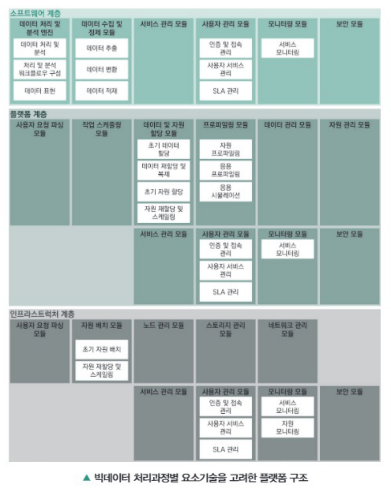
① 소프트웨어 계층
빅데이터 애플리케이션을 구성하며 데이터 처리 및 분석과 이를 위한 데이터 수집, 정제를 한다.
| 컴포넌트 | 설명 | |
|---|---|---|
| 데이터 처리 및 분석 엔진 | 데이터를 처리하고 분석한다. | |
| 데이터 처리 및 분석 | 서비스에 따른 데이터 처리 및 분석을 수행한다. | |
| 처리 및 분석 워크플로우 구성 | 데이터 처리 및 분석을 위한 워크플로우를 구성한다. | |
| 데이터 표현 | 데이터 처리 및 분석한 결과를 표현한다. | |
| 데이터 수집 및 정제 모듈 | 빅데이터 분석 엔진을 위한 데이터를 수집하고 정제한다. | |
| 데이터 추출 | 원천 데이터에서 데이터 추출한다. | |
| 데이터 변환 | 원천 데이터에서 추출한 데이터를 변환하고 균질화 및 정제한다. | |
| 데이터 적재 | 변환된 데이터를 데이터 웨어하우스로 적재한다. | |
| 서비스 관리 모듈 | 소프트웨어 계층에서 제공하는 서비스를 관리한다. | |
| 사용자 관리 모듈 | 사용자를 관리한다. | |
| 인증 및 접속 관리 | 사용자별 인증과 접속 관리를 한다. | |
| 사용자 서비스 관리 | 사용자별 서비스를 관리한다. | |
| SLA 관리 | 사용자별 서비스 수준 협약(Service Level Agreement)을 관리한다. | |
| 모니터링 모듈 | 플랫폼 및 인프라스트럭처 서비스 사용성과 성능을 모니터링한다. | |
| 보안 모듈 | 소프트웨어 계층의 보안을 관리한다. | |
② 플랫폼 계층
빅데이터 애플리케이션을 실행하기 위한 플랫폼을 제공하며, 작업 스케줄링이나 데이터 및 자원 할당과 관리, 프로파일링 등을 수행한다.
| 컴포넌트 | 설명 | |
|---|---|---|
| 사용자 요청 파싱 | 사용자가 요청한 내용을 파싱한다. | |
| 작업 스케줄링 모듈 | 사용자 애플리케이션 실행 작업을 스케줄링한다. | |
| 데이터 및 자원 할당 모듈 | 사용자 애플리케이션을 실행하는 데이터와 자원을 할당한다. | |
| 초기 데이터 할당 | 사용자 애플리케이션을 실행하는 사용자의 데이터를 초기 할당한다. | |
| 데이터 재할당 및 복제 | 동적인 상황을 고려하여 데이터를 재할당 및 복제한다. | |
| 초기 자원 할당 | 사용자 애플리케이션을 실행하는 인프라스트럭처의 자원을 초기 할당한다. | |
| 자원 재할당 및 스케일링 | 동적인 상황을 고려하여 자원을 재할당 및 스케일링한다. | |
| 프로파일링 모듈 | 자원 및 애플리케이션을 프로파일링 또는 시뮬레이션한다. | |
| 자원 프로파일링 | 인프라스트럭처 자원을 할당하는 인프라스트럭처 자원을 프로파일링한다. | |
| 애플리케이션 프로파일링 | 인프라스트럭처 자원을 할당하는 사용자 애플리케이션을 프로파일링한다. | |
| 애플리케이션 시뮬레이션 | 인프라스트럭처 자원 선택 및 구성을 하는 사용자 애플리케이션을 시뮬레이션한다. | |
| 데이터 관리 모듈 | 사용자 데이터를 관리한다. | |
| 자원 관리 모듈 | 인프라스트럭처 자원을 관리한다. | |
| 서비스 관리 모듈 | 플랫폼 계층에서 제공하는 서비스를 관리한다. | |
| 사용자 관리 모듈 | 사용자를 관리한다. | |
| 인증 및 접속 관리 | 사용자별 인증과 접속 관리를 한다. | |
| 사용자 서비스 관리 | 사용자별 서비스를 관리한다. | |
| SLA 관리 | 사용자별 서비스 수준 협약을 관리한다. | |
| 모니터링 모듈 | 인프라스트럭처 서비스 가용성과 성능을 모니터링한다. | |
| 보안 모듈 | 플랫폼 계층의 보안을 관리한다. | |
③ 인프라스트럭처 계층
자원 배치와 스토리지 관리, 노드 및 네트워크 관리 등을 통해 빅데이터 처리와 분석에 필요한 자원을 제공한다.
| 컴포넌트 | 설명 | |
|---|---|---|
| 사용자 요청 파싱 | 사용자가 요청한 내용을 파싱한다. | |
| 자원 배치 모듈 | 사용자에게 제공할 자원을 배치한다. | |
| 초기 자원 배치 | 사용자에게 제공하는 자원을 초기 배치한다. | |
| 자원 재배치 및 스케일링 | 동적인 상황을 고려하여 자원을 재배치 및 스케일링한다. | |
| 노드 관리 모듈 | 인프라스트럭처 내의 노드를 관리한다. | |
| 데이터 관리 모듈 | 인프라스트럭처 내의 스토리지를 관리한다. | |
| 네트워크 관리 모듈 | 인프라스트럭처 내외의 네트워크를 관리한다. | |
| 서비스 관리 모듈 | 인프라스트럭처 계층에서 제공하는 서비스를 관리한다. | |
| 사용자 관리 모듈 | 사용자를 관리한다. | |
| 인증 및 접속 관리 | 사용자별 인증과 접속 관리를 한다. | |
| 사용자 서비스 관리 | 사용자별 서비스를 관리한다. | |
| SLA 관리 | 사용자별 서비스 수준 협약을 관리한다. | |
| 모니터링 모듈 | 서비스를 모니터링 한다. | |
| 서비스 모니터링 | 서비스 가용성과 성능을 모니터링한다. | |
| 자원 모니터링 | 노드, 스토리지, 네트워크 등 자원 가용성과 성능을 모니터링한다. | |
| 보안 모듈 | 인프라스트럭처 계층의 보안을 관리한다. | |
- 빅데이터 플랫폼은 빅데이터 수집, 저장, 처리, 분석 등 전 과정을 통합적으로 제공한다.
- 빅데이터를 처리하는 과정에서 발생하는 컴퓨팅 부하, 저장 부하, 네트워크 부하들을 해소하는 기능을 한다.
- 빅데이터 플랫폼은 소프트웨어 계층과 하드웨어 계층으로 구성되어 있다.
- 데이터 구조의 변화와 신속성 요구, 데이터 분석 유연성 증대 등으로 인해 빅데이터 플랫폼이 등장하였다.
- 빅데이터 플랫폼은 빅데이터 수집부터 저장, 처리, 분석 등 전 과정을 통합적으로 제공하여 그 기술들을 잘 사용할 수 있도록 준비된 환경이다.
- 빅데이터를 처리하는 과정에서 부하 발생은 불가피하며, 빅데이터 플랫폼은 이러한 부하들을 기술적인 요소들을 결합하여 해소한다.
- 빅데이터 처리과정별 요소기술을 고려한 3개층(소프트웨어 계층, 플랫폼 계층, 인프라스트럭처 계층)으로 구성되어 있다.
- 빅데이터 플랫폼은 비즈니스 요구사항 변화, 데이터 규모와 처리 복잡도 증가, 데이터 구조의 변화와 신속성 요구, 데이터 분석 유연성 증대로 인해 등장하게 되었다.
02 빅데이터 처리기술
1) 빅데이터 처리과정과 요소기술
① 생성
- 데이터베이스나 파일 관리 시스템과 같은 내부 데이터가 있다.
- 인터넷으로 연결된 외부로부터 생성된 파일이나 데이터가 있다.
② 수집
- 크롤링을 통해 데이터 원천으로부터 데이터를 검색하여 수집한다.
- ETL을 통해 소스 데이터로부터 추출하고, 변환하여, 적재한다.
- 단순한 수집이 아니라 검색 및 수집, 변환 과정을 모두 포함한다.
- 로그 수집기나, 센서 네트워크 및 Open API 등을 활용할 수 있다.
③ 저장(공유)
- 저렴한 비용으로 데이터를 쉽고 빠르게 많이 저장한다.
- 정형 데이터뿐만 아니라 반정형, 비정형 데이터도 포함한다.
- 병렬 DBMS나 하둡(Hadoop), NoSQL 등 다양한 기술을 사용할 수 있다.
- 시스템 간의 데이터를 서로 공유할 수 있다.
④ 처리
- 데이터를 효과적으로 처리하는 기술이 필요한 단계이다.
- 분산 병렬 및 인메모리(In-memory) 방식으로 실시간 처리한다.
- 대표적으로 하둡(Hadoop)의 맵리듀스(MapReduce)를 활용할 수 있다.
⑤ 분석
- 데이터를 신속하고 정확하게 분석하여 비즈니스에 기여한다.
- 특정 분야 및 목적의 특성에 맞는 분석 기법 선택이 중요하다.
- 통계분석, 데이터 마이닝, 텍스트 마이닝, 기계학습 방법 등이 있다.
⑥ 시각화
- 빅데이터 처리 및 분석 결과를 사용자에게 보여주는 기술이다.
- 다양한 수치나 관계 등을 표, 그래프 등을 이용해 쉽게 표현하고 탐색이나 해석에 활용한다.
- 정보 시각화 기술, 시각화 도구, 편집 기술, 실시간 자료 시각화 기술로 구성되어 있다.
2) 빅데이터 수집
- 크롤링(Crawling) : 무수히 많은 컴퓨터에 분산 저장되어 있는 문서를 수집하여 검색 대상의 색인으로 포함시키는 기술이다. 어느 부류의 기술을 얼마나 빨리 검색 대상에 포함시키는가로 우위를 결정한다.
- 로그 수집기 : 조직 내부에 있는 웹 서버나 시스템의 로그를 수집하는 소프트웨어이다. 웹 로그나 트랜잭션 및 클릭 로그 등 각종 로그를 하나의 데이터로 수집한다.
- 센서 네트워크(Sensor Network) : 유비쿼터스 컴퓨팅 구현을 위한 초경량 저전력의 많은 센서들로 구성된 유무선 네트워크이다. 센서를 통하여 획득된 여러 정보를 네트워크로 구성된 통합 환경 내에서 재구성하여 처리한다.
- RSS Reader/Open API : 데이터의 생산, 공유, 참여할 수 있는 환경인 웹 2.0을 구현하는 기술이다. 필요한 데이터를 프로그래밍을 통해 수집할 수 있다.
- ETL 프로세스 : 데이터의 추출(Extract), 변환(Transform), 적재(Load)의 약어로, 다양한 원천 데이터를 취합해 추출하고 공통된 형식으로 변환하여 적재하는 과정이다.
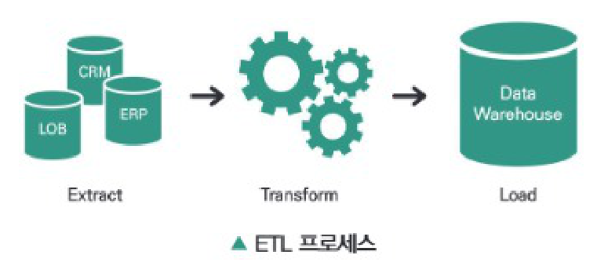
| 과정 | 설명 |
|---|---|
| 데이터 추출 (Extract) |
|
| 데이터 변환 (Transform) |
|
| 데이터 적재 (Load) |
|
3) 빅데이터 저장
① NoSQL(Not-only SQL)
전통적인 관계형 데이터베이스와는 다르게 데이터 모델을 단순화하여 설계된 비관계형 데이터베이스로 SQL을 사용하지 않는 DBMS와 데이터 저장장치이다.
- 기존의 RDBMS 트랜잭션 속성인 원자성(Atomicity), 일관성(Consistency), 독립성(Isolation), 지속성(Durability)을 유연하게 적용한다.
- 데이터 업데이트가 즉각적으로 가능한 데이터 저장소이다.
- Cloudata, Hbase, Cassandra, MongoDB 등이 대표적이다.
② 공유 데이터 시스템(Shared-data System)
- 일관성, 가용성(Availability), 분할 내성(Partition Tolerance) 중에서 최대 두 개의 속성만 보유할 수 있다. (CAP 이론)
- 분할 내성을 취하고 일관성과 가용성 중 하나를 포기하여 일관성과 가용성을 모두 취하는 기존 RDBMS보다 높은 성능과 확장성을 제공한다.
③ 병렬 데이터베이스 관리 시스템(Parallel Database Management System)
다수의 마이크로프로세서를 사용하여 여러 디스크에 질의, 갱신, 입출력 등 데이터베이스 처리를 동시에 수행하는 시스템이다.
- 확장성을 제공하기 위해 작은 단위의 동작으로 트랜잭션 적용이 필요하다.
- VoltDB, SAP HANA, Vertica, Greenplum, Netezza가 대표적이다.
④ 분산 파일 시스템
네트워크로 공유하는 여러 호스트의 파일에 접근할 수 있는 파일 시스템이다.
- 데이터를 분산하여 저장하면 데이터 추출 및 가공 시 빠르게 처리할 수 있다.
- GFS(Google File System), HDFS(Hadoop Distributed File System), 아마존 S3 파일 시스템이 대표적이다.
⑤ 네트워크 저장 시스템
이기종 데이터 저장 장치를 하나의 데이터 서버에 연결하여 총괄적으로 데이터를 저장 및 관리하는 시스템이다.
- SAN(Storage Area Network), NAS(Network Attached Storage)가 대표적이다.
4) 빅데이터 처리
① 분산 시스템과 병렬 시스템
| 분산 시스템 |
|
| 병렬 시스템 |
|
- 용어는 구분되어 사용되기도 하지만 서로 중첩되는 부분이 많아 실제 시스템에서도 이 둘을 명확히 구분하기는 어렵다.
- 두 개념을 아우르는 분산 병렬 컴퓨팅이라는 용어를 사용한다.
② 분산 병렬 컴퓨팅
다수의 독립된 컴퓨팅 자원을 네트워크상에 연결하여 이를 제어하는 미들웨어(Middleware)를 이용해 하나의 시스템으로 동작하게 하는 기술이다.
| 문제 | 설명 |
|---|---|
| 전체 작업의 배분 문제 |
|
| 각 프로세서에서 계산된 중간 결과물을 프로세서 간 주고받는 문제 |
|
| 서로 다른 프로세서 간 동기화 문제 |
|
③ 하둡(Hadoop)
분산 처리 환경에서 대용량 데이터 처리 및 분석을 지원하는 오픈 소스 소프트웨어 프레임워크이다.
- 야후에서 최초로 개발했으며, 지금은 아파치 소프트웨어 재단에서 프로젝트로 관리되고 있다.
- 하둡 분산파일시스템인 HDFS와 분산칼럼기반 데이터베이스인 Hbase, 분산 컴퓨팅 지원 프레임워크인 맵리듀스(MapReduce)로 구성되어 있다.
- 분산파일시스템을 통해 수 천대의 장비에 대용량 파일을 나누어 저장할 수 있는 기능을 제공한다.
- 분산파일시스템에 저장된 대용량의 데이터들을 맵리듀스를 이용하여 실시간으로 처리 및 분석 가능하다.
- 하둡의 부족한 기능을 보완하는 하둡 에코시스템이 등장하여 다양한 솔루션을 제공한다.
④ 아파치 스파크(Apache Spark)
실시간 분산형 컴퓨팅 플랫폼으로 In-Memory 방식으로 처리를 하며 하둡보다 처리속도가 빠르다.
- 스칼라 언어로 개발되었지만 스칼라뿐만 아니라 Java, R, Python을 지원한다.
⑤ 맵리듀스(MapReduce)
구글에서 개발한 방대한 양의 데이터를 신속하게 처리하는 프로그래밍 모델로 효과적인 병렬 및 분산 처리를 지원한다.
- 런타임(Runtime)에서의 입력 데이터 분할, 작업 스케줄링, 노드 고장, 노드 간의 데이터 전송 작업이 맵리듀스 처리 성능에 많은 영향을 미친다.
| 1단계 | 입력 데이터를 읽고 분할한다. |
| 2단계 | 분할된 데이터를 할당해 맵 작업을 수행한 후, 그 결과인 중간 데이터를 통합 및 재분할한다. |
| 3단계 | 통합 및 재분할된 중간 데이터를 셔플(Shuffle)한다. |
| 4단계 | 셔플된 중간 데이터를 이용해 리듀스 작업을 수행한다. |
| 5단계 | 출력 데이터를 생성하고, 맵리듀스 처리를 종료한다. |
맵리듀스 처리
[ABR], [CCR], [ACB] 데이터를 입력받아 각 원소의 개수를 구하고자 한다.
- 입력받은 데이터를 3개로 균등하게 분할한다.
- 분할된 3개의 데이터를 할당하여 맵 작업을 수행한 후, 그 중간 결과값을 [A], [B], [C], [R]처럼 같은 값끼리 통합 및 재분할한다.
- 통합 및 재분할된 중간 결과값을 셔플한다.
- 셔플된 중간 결과값을 이용해 리듀스 작업을 수행하여 [A], [B], [C], [R] 각각의 개수를 구한다.
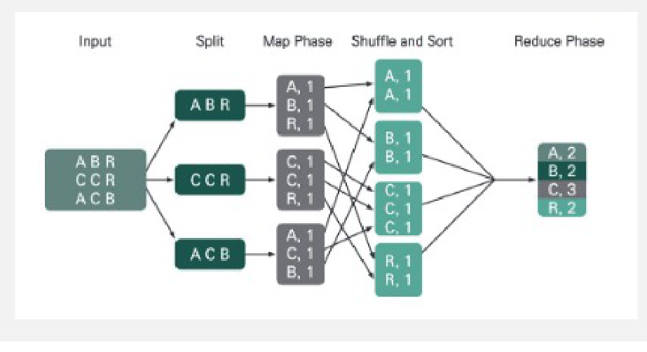
⑥ 복합 이벤트 처리(CEP, Complex Event Processing)
여러 소스에서 지속적으로 발생하는 이벤트를 대상으로, 실시간으로 의미 있는 정보를 추출하여 이에 대응하는 기능을 수행하는 것이다.
- 이벤트 데이터는 스트림 데이터로써 대량으로 지속해서 입력되는 데이터, 시간 순서가 중요한 데이터, 끝이 없는 데이터 등이다.
- 전통적 관계형 데이터베이스는 스트림 데이터의 실시간 처리 분석에 한계가 있으나 CEP는 데이터가 발생·유입되는 즉시 패턴을 분석하여 신속히 처리한다.
- 직관적인 비즈니스 규칙을 기반으로 이벤트를 정의하므로 비즈니스 부서와 IT · 개발 부서 간의 원활한 의사소통을 지원한다.
5) 빅데이터 분석
① 데이터 분석 방법의 분류
- 탐구 요인 분석(Exploratory Factor Analysis, EFA) : 데이터 간 상호 관계를 파악하여 데이터를 분석하는 방법이다.
- 확인 요인 분석(Confirmatory Factor Analysis, CFA) : 관찰된 변수들의 집합 요소 구조를 파악하기 위한 통계적 기법을 통해 데이터를 분석하는 방법이다.
② 데이터 분석 방법
| 구분 | 내용 |
|---|---|
| 분류 (Classification) |
|
| 군집화 (Clustering) |
|
| 기계학습 (Machine Learning) |
|
| 텍스트 마이닝 (Text Mining) |
|
| 웹 마이닝 (Web Mining) |
|
| 오피니언 마이닝 (Opinion Mining) |
|
| 리얼리티 마이닝 (Reality Mining) |
|
| 소셜 네트워크 분석 (Social Network Analysis) |
|
| 감성 분석 (Sentiment Analysis) |
|
- 크롤링은 분산 저장되어 있는 문서를 수집하여 검색 대상의 색인으로 포함시키는 수집 기술이다.
- 분산 병렬 컴퓨팅은 다수의 독립된 컴퓨팅 자원을 네트워크상에 연결하여 하나로 동작하게 하는 기술이다.
- NoSQL은 기존의 RDBMS 트랜잭션 속성인 원자성, 일관성, 독립성, 지속성을 유연하게 적용하는 저장 기술이다.
- 확인 요인 분석(CFA)은 데이터 간 상호 관계를 파악하여 데이터를 분석하는 방법이다.
- 크롤링은 웹 에이전트를 이용하여 인터넷 링크를 따라다니며 방문한 사이트의 웹 페이지나 소셜 데이터 등 공개되어 있는 데이터를 수집하는 기술이다.
- 분산 병렬 컴퓨팅은 다수의 독립된 컴퓨팅 자원을 네트워크상에 연결하여 이를 제어하는 미들웨어를 이용해 하나의 시스템으로 동작하게 하는 처리 기술이다.
- NoSQL은 전통적인 관계형 데이터베이스와는 다르게 데이터 모델을 단순화하여 설계된 비관계형 데이터베이스로 SQL을 사용하지 않는 DBMS와 데이터 저장장치이다.
- 확인 요인 분석(CFA)은 관찰된 변수들의 집합 요소 구조를 파악하기 위한 통계적 기법을 통해 데이터를 분석하는 방법이며, 데이터 간 상호 관계를 파악하여 데이터를 분석하는 방법은 탐구 요인 분석(EFA)이다.
03 빅데이터와 인공지능
1) 인공지능(Artificial Intelligence, AI)
① 인공지능의 정의
- 인공지능은 기계를 지능화하는 노력이며, 지능화란 객체가 환경에서 적절히, 그리고 예지력을 갖고 작동하도록 하는 것이다. (Artificial Intelligence and life in 2030, 스탠퍼드대학교 AI100)
- 인공지능은 합리적 행동 수행자(Rational Agent)이며, 어떤 행동이 최적의 결과를 낳을 수 있도록 하는 의사결정 능력을 갖춘 에이전트를 구축하는 것이다. (Artificial Intelligence – a modern approach [3rd edition], 러셀과 노빅)
- 인공지능은 설정한 목표를 극대화하는 행동을 제시하는 의사결정 로직이다.
- 인공지능은 사람과 흡사한 생각과 행동에 초점을 맞춘 정의도 소개된 바 있으나, 인공지능 구현방법이 구체화 될수록 인간처럼 보다는 합리성을 더 강조하고 있다.
② 인공지능과 기계학습 및 딥러닝의 관계
- 인공지능을 논할 때 기계학습과 딥러닝을 혼재하여 사용한다.
- 인공지능은 사람이 생각하고 판단하는 사고 구조를 구축하려는 전반적인 노력이다.
- 기계학습은 인공지능의 연구 분야 중 하나로 인간의 학습 능력과 같은 기능을 축적된 데이터를 활용하여 실현하고자 하는 기술 및 방법이다.
- 딥러닝은 기계학습 방법 중 하나로 컴퓨터가 많은 데이터를 이용해 사람처럼 스스로 학습할 수 있도록 인공신경망 등의 기술을 이용한 기법이다.
③ 딥러닝(Deep Learning)의 특징
- 딥러닝은 제프리 힌튼(Geoffrey Everest Hinton)의 노력으로 함수추정 방법으로써의 신경망 관점에서 정보를 압축, 가공, 재현하는 알고리즘으로 일반화하면서 인공지능의 핵심 동인이 되었다.
- 깊은 구조에 의해 엄청난 양의 데이터를 학습할 수 있는 특징을 갖고 있어 인공지능 발전에 크게 기여하였다.
- 딥러닝의 학습을 위한 데이터의 확보는 곧 우수한 인공지능 개발과 깊은 관련성이 있다.
④ 기계학습의 종류
| 종류 | 내용 |
|---|---|
| 지도학습 (Supervised Learning) |
|
| 비지도학습 (Unsupervised Learning) |
|
| 준지도학습 (Semi-supervised Learning) |
|
| 강화학습 (Reinforcement Learning) |
|
⑤ 기계학습 방법에 따른 인공지능 응용분야
| 학습 종류 | 방법 | 응용 영역 |
|---|---|---|
| 지도학습 | 분류모형 |
|
| 회귀모형 |
| |
| 비지도학습 | 군집분석 |
|
| 오토인코더 (AutoEncoder) |
| |
| 생성적 적대 신경망 (Generative Adversarial Network) |
| |
| 강화학습 | 강화학습 |
|
2) 인공지능 데이터 학습의 진화
① 전이학습(Transfer Learning)
전이학습은 기존의 학습된 모델의 지식을 새로운 문제에 적용하여 학습을 빠르고 효율적으로 수행하는 머신러닝 기법이다. 전이학습은 기존의 모델이 학습한 특성, 가중치, 표현 등을 새로운 모델에 전달하여 새로운 작업에 적용하는 방식으로 작동한다. 비슷한 분야에서 학습된 딥러닝 모형을 다른 문제를 해결하기 위해 사용하고자 할 때 적은 양의 데이터로도 좋은 결과를 얻을 수 있다.
- 주로 이미지, 언어, 텍스트 인식과 같이 지도학습 중 분류모형인 인식(recognition) 문제에 활용 가능하다.
- 인식 문제의 경우 데이터 표준화가 가능하여 사전학습모형 입력형식에 맞출 수 있다.
② 전이학습 기반 사전학습모형(Pre-trained Model)
학습 데이터에 의한 인지능력을 갖춘 딥러닝 모형에 추가적인 데이터를 학습시키는 방식이다.
- 데이터 학습량에 따라 점차 발전하는 것도 중요하지만, 응용력을 갖추는 것 또한 필수적이다.
- 상대적으로 적은 양의 데이터로도 제한된 문제에 인공지능 적용이 가능하다.
- 이미 학습된 사전학습모형도 데이터를 함축한 초보적 인공지능으로서 충분한 가치를 지닌 새로운 의미의 데이터라고 할 수 있다.
③ BERT(Bidirectional Encoder Representations from Transformers)
2018년 구글에서 발표한 언어인식 사전학습모형이다. 확보된 언어 데이터의 추가 학습을 통한 신속한 학습이 가능하다.
- 다층의 임베딩 구조를 통해 1억2천 개가 넘는 파라미터로 구성된 획기적인 모형이다.
- 256개까지의 문자가 입력되어 768차원 숫자 벡터가 생성되는 방식이다.
- 언어 인식뿐 아니라 번역, 챗봇의 Q&A 엔진으로 활용 가능하다.
3) 빅데이터와 인공지능의 관계
① 인공지능을 위한 학습 데이터 확보
- 학습 데이터 측면을 고려한 양질의 데이터 확보는 결국 성공적인 인공지능 구현과 직결된다.
- 딥러닝은 깊은 구조를 통해 무한한 모수 추정이 필요한 만큼 많은 양의 데이터가 필요하다.
- 인공지능 학습에 활용될 수 있는 데이터로 가공이 필요하며, 학습의 가이드를 제공해 주는 애노테이션 작업이 필수적이다.
② 학습 데이터의 애노테이션 작업
많은 데이터 확보 후 애노테이션을 통해 학습이 가능한 데이터로 가공하는 작업이 필요하다.
- 작업의 특성상 많은 수작업이 동반되며, 이로 인해 인공지능 사업은 노동집약적이라는 인식을 만들어 냈다.
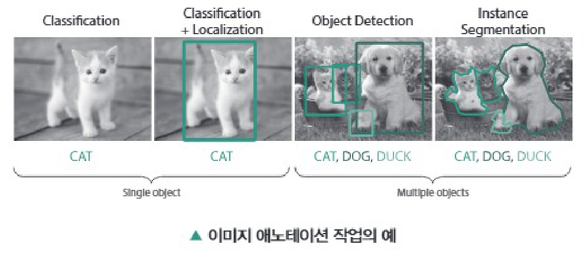
③ 애노테이션 작업을 위한 도구로써의 인공지능
- 인공지능 시장이 확장되며 애노테이션 작업을 전문으로 하는 기업의 수가 증가하였다.
- 경쟁으로 인해 학습용 데이터에 대한 보안 및 애노테이션 결과에 대한 품질 요구수준이 높아졌다.
- 기업들은 데이터 업로드 및 애노테이션 도구, 작업 모니터링을 위한 플랫폼을 제공하기 시작했다.
- 현재 자동으로 애노테이션을 수행해 주는 인공지능 기반의 애노테이션 도구를 제공하는 서비스로 진화 중이다.
4) 인공지능의 기술동향
① 기계학습 프레임워크(Machine Learning Framework) 보급 확대
- 구글브레인이 개발한 텐서플로우(Tensorflow)는 파이썬 기반 딥러닝 라이브러리로 여러 CPU 및 GPU와 플랫폼에서 사용 가능하다.
- 케라스(Keras)는 딥러닝 신경망 구축을 위한 단순화된 인터페이스를 가진 라이브러리이며, 몇 줄의 코드만으로 딥러닝 모형 개발이 가능하다.
② 생성적 적대 신경망(Generative Adversarial Networks, GAN)
GAN은 두 개의 인공신경망으로 구성된 딥러닝 이미지 생성 알고리즘이다.
- 생성자가 가짜 사례를 생성하면 감별자가 진위를 판별하도록 구성한 후 이들이 적대적 관계 속에서 공방전을 반복하도록 한다.
- 가짜 사례의 정밀도를 점점 더 진짜 사례와 구별하기 어려운 수준으로 높이는 방식으로 작동한다.
- 주로 새로운 합성 이미지를 생성하는 분석에 많이 적용되어 왔으나, 점차 다른 분야에 응용하는 사례가 늘고 있다.
③ 오토인코더(Auto-encoder)
오토인코더는 라벨이 설정되어 있지 않은 학습 데이터로부터 더욱 효율적인 코드로 표현하도록 학습하는 신경망이다.
- 입력 데이터의 차원을 줄여 모형을 단순화시키기 위해 활용할 수 있다.
④ 설명 가능한 인공지능(explainable AI, XAI)
설명 가능한 인공지능은 결론 도출 과정에 대한 근거를 차트나 수치 또는 자연어 형태의 설명으로 제공한다.
- 기존의 기계학습은 정확한 예측을 할 수 있도록 하는 방향으로 개발되어 왔다.
- 기존 기계학습의 완성된 모형은 내부 구조가 매우 복잡하고 의미를 이해하기 어려워 일종의 블랙박스 모형이라 불리었다.
⑤ 기계학습 자동화(AutoML)
기계학습 자동화는 명칭 그대로 기계학습의 전체 과정을 자동화하는 것이다.
- 세부적으로는 데이터 전처리, 변수 생성, 변수 선택, 알고리즘 선택, 하이퍼파라미터 최적화 등의 기능을 수행한다.
- 기계학습 모형 개발 과정의 생산성을 높이며 비전문가들의 활용을 용이하게 할 것으로 기대된다.
⑥ 거대 언어 모델(Large Language Model, LLM)
- 거대 언어 모델은 대형 언어 모델이라고도 불리며 수십억 개 이상의 파라미터로 구성된 신경망을 기반으로 학습된 언어 모델이다.
- LLM의 작동방식은 크게 토큰화, 트랜스포머 모델, 프롬프트의 3가지로 구분된다.
- 토큰화는 자연어 처리의 일부로 일반 인간 언어를 저수준 기계 시스템(LLMS)이 이해할 수 있는 시퀀스로 변환하는 작업을 말한다.
- 트랜스포머 모델은 문장 속 단어와 같은 순차 데이터 내의 관계를 추적해 맥락과 의미를 학습하는 신경망으로 텍스트와 음성을 거의 실시간으로 생성한다.
- 프롬프트는 거대 언어 모델에 제공하는 정보로 더 정확한 프롬프트를 제공할수록 다음 단어를 더 잘 예측하고 정확한 문장을 구성할 수 있다.
5) 인공지능의 한계점과 발전방향
① 국내시장의 한계
- 국내에서 축적한 머신러닝 및 인공지능과 관련한 수학, 통계학적 이해도는 낮은 수준이다.
- 인공지능 개발을 위한 데이터 확보 및 그 중요성에 대한 인식이 부족하다.
② 인공지능의 미래
- 딥러닝의 재학습 및 전이학습 특성을 활용한 사전학습모형이 새로운 데이터 경제의 모습이 될 것이다.
- 마스킹이나 라벨링 등의 애노테이션 작업을 통해 학습용 데이터를 가공하는 산업이 확산되고 있다.
- 복잡한 BERT의 학습을 위한 구글의 클라우드 서비스와 같은 확장된 개념의 데이터 경제로 파생될 것으로 보인다.
- 데이터 확보 후 애노테이션을 통해 학습이 가능한 데이터로 가공하는 작업이 필요하다.
- 오토인코더는 데이터로부터 더욱 효율적인 코드로 표현하도록 학습하는 신경망으로 강화학습 방법이다.
- 기계학습은 인공지능의 연구 분야 중 하나로 인간의 학습 능력과 같은 기능을 실현하고자 하는 기술이다.
- 딥러닝은 기계학습 방법 중 하나로 컴퓨터가 스스로 학습할 수 있도록 인공신경망 등의 기술을 이용한다.
- 애노테이션은 데이터상의 주석 작업으로 딥러닝과 같은 학습 알고리즘이 무엇을 학습하여야 하는지 알려 주는 표식 작업이다.
- 오토인코더는 라벨이 설정되어 있지 않은 학습 데이터로부터 더욱 효율적인 코드로 표현하도록 학습하는 신경망으로 비지도학습 방법 중 하나이다.
04 개인정보 개요
1) 개인정보의 정의와 판단기준
① 개인정보의 정의
- 살아 있는 개인에 관한 정보로서 개인을 알아볼 수 있는 정보이다.
- 해당 정보만으로는 특정 개인을 알아볼 수 없더라도 다른 정보와 쉽게 결합하여 알아볼 수 있는 정보를 포함한다.
② 개인정보의 판단기준
- ‘생존하는’ ‘개인에 관한’ 정보여야 한다.
- ‘정보’의 내용 · 형태 등은 제한이 없다.
- 개인을 ‘알아볼 수 있는’ 정보여야 한다.
- 다른 정보와 ‘쉽게 결합하여’ 개인을 알아볼 수 있는 정보도 포함한다.
2) 개인정보의 이전
개인정보가 다른 사람(제3자)에게 이전되거나 공동으로 처리하게 하는 것이다. 개인정보의 처리 위탁과 제3자 제공으로 분류된다.
① 개인정보의 처리 위탁
개인정보처리자의 업무를 처리할 목적으로 제3자에게 이전되는 것이다.
② 개인정보의 제3자 제공
해당 정보를 제공받는 자의 고유한 업무를 처리할 목적 및 이익을 위하여 개인정보가 이전되는 것이다.
3) 개인정보의 보호
① 개인정보의 보호조치
- 조직 내부의 정보보안 방침과 개인정보보호법에 위배되지 않도록 개인정보보호 가이드라인을 점검한다.
- 데이터를 외부에 공개하는 경우 가이드라인에서 정한 규칙을 준수하는지 반드시 확인한다.
- 가이드라인에 명시되지 않은 경우 관계기관이나 조직 내부의 법무가이드를 받은 후 적절한 범위 안에서 데이터를 활용하도록 한다.
- 개인정보 보호를 위해 주기적인 패스워드 변경, 시스템 패스워드 관리 보안 강화, 의심스러운 메일 열람 금지, 정기적인 보안교육 참여 등을 유도한다.
- 백신의 설치 및 최신버전으로 유지하고, 개인정보를 과하게 요구하는 사이트의 가입을 자제한다.
② 빅데이터 개인정보보호 가이드라인(방송통신위원회)
| 구분 | 내용 |
|---|---|
| 비식별화 | 〈수집 시부터 개인식별 정보에 대한 철저한 비식별화 조치〉
|
| 투명성 확보 | 〈빅데이터 처리 사실 · 목적 등의 공개를 통한 투명성 확보〉
|
| 재식별 시 조치 | 〈개인정보 재식별 시, 즉시 파기 및 비식별화 조치〉
|
| 민감정보 및 비밀정보 처리 | 〈민감정보 및 통신비밀의 수집 · 이용 · 분석 등 처리 금지〉
|
| 기술적 · 관리적 보호조치 | 〈수집된 정보의 저장 · 관리 시 ‘기술적 · 관리적 보호조치’ 시행〉
|
③ 개인정보 보호를 위한 고려사항
- 기업은 적법하게 정보주체의 권리를 보호하면서 데이터의 효율적인 이용 방안을 모색하는 것이 중요하다.
- 데이터와 관련된 주요 법령 및 규제기관의 가이드라인을 지속적으로 파악하고 내부 프로세스를 사전에 검토하여야 한다.
- 적용되는 법령에 따른 내부 개인정보 컴플라이언스 체계를 구축하여야 한다.
- 데이터를 이전할 경우에는 관련 법률에 따른 적법한 프로세스를 마련하여야 한다.
4) 개인정보보호 관련 법률
- 비즈니스 모델과 처리하는 데이터에 따라 「개인정보보호법」과 「정보통신망 이용촉진 및 정보보호 등에 관한 법률」 그리고 「신용정보의 이용 및 보호에 관한 법률」 등을 기본적으로 검토하여야 한다. (데이터 3법)
- 이 외 경우에 따라 「위치정보의 보호 및 이용 등에 관한 법률」과 「정보통신기반 보호법」 및 「국가정보화 기본법」과 「전자정부법」 등을 추가적으로 검토하여야 한다.
- 개인정보의 처리 위탁은 해당 정보를 제공받는 자의 고유한 업무를 처리할 목적 및 이익을 위하여 개인정보가 이전되는 것이다.
- 개인정보는 살아 있는 개인에 관한 정보로서 개인을 알아볼 수 있는 정보이다.
- 특정 개인의 사상 · 신념, 정치적 견해 등 민감정보의 생성을 목적으로 정보의 수집 · 이용 · 저장 · 조합 · 분석 등 처리 금지한다.
- 개인정보가 포함된 공개된 정보 및 이용내역정보는 비식별화 조치를 취한 후 수집 · 저장 · 조합 · 분석 및 제3자 제공 등이 가능하다.
- 개인정보의 처리 위탁은 개인정보처리자의 업무를 처리할 목적으로 제3자에게 이전되는 것이며, 해당 정보를 제공받는 자의 고유한 업무를 처리할 목적 및 이익을 위하여 개인정보가 이전되는 것은 개인정보의 제3자 제공이다.
- 개인정보는 해당 정보만으로는 특정 개인을 알아볼 수 없더라도 다른 정보와 쉽게 결합하여 알아볼 수 있는 정보를 포함한다.
- 빅데이터 개인정보보호 가이드라인에서는 이메일, 문자 메시지 등 통신 내용의 수집 · 이용 · 저장 · 조합 · 분석 등 또한 처리 금지하고 있다.
- 비식별화 후 빅데이터 처리 과정 및 생성정보에 개인정보가 재식별될 경우, 즉시 파기하거나 추가적인 비식별화 조치하도록 한다.
05 개인정보 법 · 제도
1) 개인정보보호법
① 개인정보보호법의 개요
- 당사자의 동의 없는 개인정보 수집 및 활용하거나 제3자에게 제공하는 것을 금지하는 등 개인정보보호를 강화한 내용을 담아 제정한 법률이다.
- 상대방의 동의 없이 개인정보를 제3자에게 제공하면 5년 이하의 징역이나 5,000만 원 이하의 벌금에 처할 수 있다.
② 개인정보의 범위(제2조 제1호)
- ‘개인정보’란 살아 있는 개인에 관한 정보로서 성명, 주민등록번호 및 영상 등을 통하여 개인을 알아볼 수 있는 정보(해당 정보만으로는 특정 개인을 알아볼 수 없더라도 다른 정보와 쉽게 결합하여 알아볼 수 있는 것을 포함)를 말한다.
- 어떤 정보가 개인정보에 해당하는지는 그 정보가 특정 개인을 알아볼 수 있게 하는 다른 정보와 쉽게 결합할 수 있는가에 따라 결정된다.
- 법원은 그 정보 자체로는 누구의 정보인지를 알 수 없더라도 다른 정보와 결합 가능성을 비교적 넓게 인정하여 개인정보에 해당한다 판단하고 있다.
③ 개인정보의 처리 위탁
- 일정한 내용을 기재한 문서에 의하여 업무 위탁이 이루어져야 한다(개인정보보호법 제26조 제1항).
- 위탁하는 업무의 내용과 수탁자를 정보주체에게 알려야 하는바, 개인정보처리방침에 해당 내용을 추가하여 공개하거나, 사업장 등의 보기 쉬운 장소에 게시하는 방법 등을 시행해야 한다(개인정보보호법 제26조 제3항, 동법 시행령 제28조 제3항).
- 수탁자에 대한 교육 및 감독 의무를 부담하게 된다(개인정보보호법 제26조 제4항).
- 수탁자가 위탁 받은 업무와 관련하여 개인정보를 처리하는 과정에서 개인정보보호법을 위반하여 발생한 손해배상책임에 대하여는 수탁자를 개인정보처리자의 소속 직원으로 본다(개인정보보호법 제26조 제6항).
- 손해가 발생한 경우 정보주체의 손해배상 청구에 대해 위탁자가 책임을 질 수 있다.
④ 개인정보의 제3자 제공
- 정보주체로부터 개인정보 제3자 제공 동의를 받아야 한다(개인정보보호법 제17조 제1항).
⑤ 개인정보 처리 위탁과 제3자 제공 판단 기준
〈서울중앙지방법원 2018. 8. 16. 선고 2017노1296 판결 참조〉
- 개인정보의 취득목적과 방법
- 대가 수수 여부
- 수탁자에 대한 실질적인 관리 · 감독 여부
- 정보주체 또는 이용자의 개인정보 보호 필요성에 미치는 영향
- 개인정보를 이용할 필요가 있는 자가 실질적으로 누구인지 등
⑥ 비식별 개인정보의 이전
- 정보주체 또는 제3자의 이익을 부당하게 침해할 우려가 있는 경우는 제외한다.
- 통계작성 및 학술연구 등의 목적을 위하여 필요한 경우로서 ‘특정 개인을 알아볼 수 없는 형태로 개인정보’를 제공할 수 있도록 규정하고 있다(개인정보보호법 제18조 제2항 제4호).
- 데이터 제공이 목적에 부합하는지, 특정 개인을 알아볼 수 없는 형태로 제공하는지에 대해 사전에 검토하여야 한다.
2) 정보통신망 이용촉진 및 정보보호 등에 관한 법률(정보통신망법)
① 정보통신망법의 개요
- 정보통신망의 개발과 보급 등 이용 촉진과 함께 통신망을 통해 활용되고 있는 정보보호에 관해 규정한 법률이다.
- 이용자의 동의를 받지 않고 개인정보를 수집하거나 제3자에게 개인정보를 제공한 경우, 법정대리인의 동의 없이 만 14세 미만의 아동의 개인정보를 수집한 경우, 악성프로그램을 전달 또는 유포한 경우 등은 5년 이하의 징역 또는 5,000만 원 이하의 벌금에 처해진다.
② 개인정보의 처리 위탁
- 원칙적으로는 개인정보 처리위탁을 받는 자, 개인정보 처리위탁을 하는 업무의 내용을 이용자에게 알리고 동의를 받아야 한다.
- 단, 정보통신서비스 제공자 등은 정보통신서비스의 제공에 관한 계약을 이행하고 이용자의 편의 증진 등을 위하여 필요한 경우에는 고지절차와 동의절차를 거치지 않고, 이용자에게 이에 관해 알리거나 개인정보 처리방침 등에 이를 공개할 수 있다(정보통신망법 제25조 제2항).
- 만일 제3자에게 데이터 분석을 위탁할 경우, 해당 서비스가 정보통신서비스 제공에 관한 계약을 이행하고 이용자의 편의 증진을 위한 것인지 검토해야 한다.
3) 신용정보의 이용 및 보호에 관한 법률(신용정보보호법)
① 신용정보보호법의 개요
- 개인신용정보를 신용정보회사 등에게 제공하고자 하는 경우에 해당 개인으로부터 서면 또는 공인전자서명이 있는 전자문서에 의한 동의 등을 얻어야 한다.
- 신용정보주체는 신용정보회사 등이 본인에 관한 신용정보를 제공하는 때에는 제공받은 자, 그 이용 목적, 제공한 본인정보의 주요 내용 등을 통보하도록 요구하거나 인터넷을 통하여 조회할 수 있도록 요구할 수 있다.
- 신용정보회사 등이 보유하고 있는 본인정보의 제공 또는 열람을 청구할 수 있고, 사실과 다른 경우에는 정정을 청구할 수 있다.
② 신용정보의 범위(제2조 제1호 및 제2호, 제34조 제1항)
- “신용정보”란 금융거래 등 상거래에 있어서 거래 상대방의 신용을 판단할 때 필요한 정보로서 다음 각 목의 정보를 말한다.
가. 특정 신용정보주체를 식별할 수 있는 정보
나. 신용정보주체의 거래내용을 판단할 수 있는 정보
다. 신용정보주체의 신용도를 판단할 수 있는 정보
라. 신용정보주체의 신용거래능력을 판단할 수 있는 정보
마. 그 밖에 가목부터 라목까지와 유사한 정보
③ 개인신용정보
- “개인신용정보”란 신용정보 중 개인의 신용도와 신용거래능력 등을 판단할 때 필요한 정보를 말한다.
- “개인신용정보”는 기업 및 법인에 관한 정보를 제외한 살아 있는 개인에 관한 정보로서 성명 · 주민등록번호 등을 통하여 개인을 알아볼 수 있는 정보이며, 신용정보주체의 거래내용, 신용도, 신용거래능력 등과 결합되는 경우에만 개인신용정보에 해당한다.
④ 개인신용정보의 처리 위탁
- 신용정보회사 등은 그 업무 범위에서 의뢰인의 동의를 받아 다른 신용정보회사에 신용정보의 수집 · 조사를 위탁할 수 있다.
- 개인신용정보 처리에 대한 업무 위탁의 경우에는 수집된 신용정보의 처리를 자본금 또는 자본총액이 1억 원 이상인 기업으로서 신용정보관리 · 보호인 등을 지정한 자에게 위탁할 수 있다.
- 신용정보회사, 신용정보집중기관, 은행, 금융지주회사, 금융투자업자, 보험회사 등은 신용정보 처리 위탁 시 금융위원회에 보고해야 하며, 이에 관한 구체적 사항은 「금융회사의 정보처리 업무 위탁에 관한 규정」에 따른다.
- 특정 신용정보주체를 식별할 수 있는 정보는 암호화하거나 봉함 등의 보호조치를 하여야 하며, 신용정보가 분실 · 도난 · 유출 · 변조 또는 훼손당하지 않도록 수탁자를 연 1회 이상 교육하여야 한다.
- 위탁계약의 이행에 필요한 경우로서 수집된 신용정보의 처리를 위탁하기 위하여 제공하는 경우 정보주체의 동의를 받지 않아도 된다(신용정보보호법 제17조, 동법 시행령 제14조).
⑤ 개인신용정보의 제3자 제공
- 개인신용정보를 타인에게 제공하려는 경우 정보주체에 서비스 제공을 위하여 필수적 동의 사항과 그 밖의 선택적 동의 사항을 구분하여 설명한 후 각각 동의를 받도록 하고 있다(신용정보보호법 제32조, 제34조 등).
- 기타 개인정보 제공 시 개인정보보호법이 적용된다.
⑥ 개인식별정보
- “개인식별정보”란 생존하는 개인의 성명, 주소 및 주민등록번호, 여권번호, 운전면허번호, 외국인등록번호, 국내거소신고번호 및 성별, 국적 등 개인을 식별할 수 있는 정보를 말한다.
특별법
일반법에서 적용 범위를 한정 혹은 내용을 특별히 정해 놓은 법이다.
일반법과 특별법이 저촉되면 특별법이 먼저 적용되고, 특별법에 규정이 없는 사항에 대해서는 일반법이 적용된다.
정보통신서비스 제공자에 대하여는 정보통신망법(특별법)이 우선 적용되지만, 정보통신망법에 특별한 규정이 없고 개인정보보호법과 상호 모순 · 충돌하지 않는 경우에는 개인정보보호법(일반법)이 적용된다.
신용정보보호법 제3조의2는 “개인정보의 보호에 관하여 이 법에 특별한 규정이 있는 경우를 제외하고는 「개인정보보호법」에서 정하는 바에 따른다”라고 하고 있으므로 신용정보보호법은 개인정보보호법에 대해 특별법의 지위를 가진다.
법률이 상호 모순, 저촉되는 경우에는 신법이 구법에, 그리고 특별법이 일반법에 우선하나, 법률이 상호 모순되는지 여부는 각 법률의 입법목적, 규정사항 및 그 적용범위 등을 종합적으로 검토하여 판단하여야 한다.
4) 2020년 데이터 3법의 주요 개정 내용
- 데이터 이용 활성화를 위한 ‘가명정보’ 개념 도입 및 데이터간 결합 근거 마련
- 개인정보보호 관련 법률의 유사 · 중복 규정을 정비 및 거버넌스 체계 효율화
- 데이터 활용에 따른 개인정보처리자 책임 강화
- 다소 모호했던 개인정보의 판단기준 명확화
① 개인정보보호법 주요 개정 내용
- 개인정보 관련 개념을 개인정보, 가명정보, 익명정보로 구분
- 가명정보를 통계 작성 연구, 공익적 기록보존 목적을 처리할 수 있도록 허용
- 가명정보 이용 시 안전장치 및 통제 수단 마련
- 분산된 개인정보보호 감독기관을 개인정보보호위원회로 일원화
- 개인정보보호위원회는 국무총리 소속 중앙행정기관으로 격상
② 정보통신망법 주요 개정 내용
- 개인정보보호 관련 사항을 개인정보보호법으로 이관
- 온라인상 개인정보보호 관련 규제 및 감독 주체를 개인정보보호위원회로 변경
③ 신용정보보호법 주요 개정 내용
- 가명정보 개념을 도입해 빅데이터 분석 및 이용의 법적 근거 마련
- 가명정보는 통계작성, 연구, 공익적 기록보존 등을 위해 신용정보 주체의 동의 없이 이용, 제공 가능
- 개인정보보호법은 당사자 동의 없는 개인정보 수집 및 활용을 금지하는 등 내용을 담아 제정한 법률이다.
- 정보통신망 이용촉진 및 정보보호 등에 관한 법률은 정보통신망의 공적인 이용촉진 및 사적 이용을 금지하는 내용을 담아 제정한 법률이다.
- 신용정보의 이용 및 보호에 관한 법률은 개인신용정보를 신용정보회사 등에게 제공하고자 하는 경우에 해당 개인으로부터 동의를 얻어야 한다고 규정하고 있다.
- 2020년 데이터 3법의 주요 개정 내용으로 가명정보 개념을 도입하였다.
- 개인정보보호법은 당사자의 동의 없는 개인정보 수집 및 활용하거나 제3자에게 제공하는 것을 금지하는 등 개인정보보호를 강화한 내용을 담아 제정한 법률이다.
- 정보통신망 이용촉진 및 정보보호 등에 관한 법률은 정보통신망의 개발과 보급 등 이용 촉진과 함께 통신망을 통해 활용되고 있는 정보보호에 관해 규정한 법률이다.
- 신용정보의 이용 및 보호에 관한 법률은 개인신용정보를 신용정보회사 등에게 제공하고자 하는 경우에 해당 개인으로부터 서면 또는 공인전자서명이 있는 전자문서에 의한 동의 등을 얻어야 한다고 규정하고 있다.
- 2020년 데이터 3법의 주요 개정 내용으로 데이터 이용 활성화를 위한 가명정보 개념 도입 및 데이터간 결합 근거 마련, 개인정보보호 관련 법률의 유사 · 중복 규정을 정비 및 거버넌스 체계 효율화, 데이터 활용에 따른 개인정보처리자 책임 강화, 다소 모호했던 개인정보의 판단기준을 명확화 하였다.
5) 유럽 연합과 미국의 개인정보보호 체계
① 유럽 연합(EU)
- 유럽 연합의 시민의 데이터를 활용하는 경우 GDPR(General Data Protection Regulation)을 준수해야 한다.
- GDPR은 정보주체의 권리와 기업의 책임성 강화 등을 주요 내용으로 하며 위반 시 과징금 부과를 규정하고 있다.
- GDPR의 주요 항목으로 사용자가 본인의 데이터 처리 관련 사항을 제공 받을 권리, 열람 · 정정 · 삭제 요청 권리, 데이터 이동 권리, 처리 거부 요청 권리 등이 있다.
② 미국
- 미국은 기본적으로 시장 자율 규율(self-regulation) 방식으로 EU나 한국과 같이 공공 부문과 민간 부문을 포괄하는 개인정보보호에 관한 일반법이 연방법률로서 존재하지 않는다.
- 대신 공공, 통신, 금융, 교육, 의료, 근로자 정보 등 영역별로 개인정보보호를 규율하는 개별 법률이 각 분야별 개인정보보호를 담당한다.
- 주 법체계에서는 EU의 GDPR 제정 이후 캘리포니아 주의 캘리포니아 소비자 개인정보보호법(California Consumer Privacy Act, CCPA)을 시작으로 많은 주들이 포괄적인 일반 개인정보보호법을 도입하려는 노력을 진행중이다.
06 개인정보 비식별화
1) 개인정보 비식별화의 개요
① 비식별 정보
- 정보의 집합물에 대해 「개인정보 비식별 조치 가이드라인」에 따라 적정하게 ‘비식별 조치’된 정보를 말한다.
② 비식별 조치
- 정보의 집합물에서 개인을 식별할 수 있는 요소를 전부 또는 일부 삭제하거나 대체 등의 방법을 통해 개인을 알아볼 수 없도록 하는 조치를 말한다.
③ 비식별 정보의 활용
- 비식별 정보는 개인정보가 아닌 정보로 추정되므로 정보주체로부터의 별도 동의없이 해당 정보를 이용하거나 제3자에게 제공할 수 있다.
- 다만, 불특정 다수에게 공개되는 경우에는 다른 정보를 보유하고 있는 누군가에 의해 해당 정보주체가 식별될 가능성이 있으므로 비식별 정보의 공개는 원칙적으로 금지된다.
④ 비식별 정보의 보호
- 비식별 정보는 개인정보가 아닌 것으로 추정되지만, 새로운 결합 기술이 나타나거나 결합 가능한 정보가 증가하는 경우 정보주체가 ‘재식별’될 가능성이 있다.
- 비식별 정보를 처리하는 자(비식별 정보를 제공받은 자 포함)가 해당 정보를 이용하는 과정에서 재식별하게 된 경우에는 해당 정보를 즉시 처리중지하고 파기하여야 한다.
- 비식별 정보라고 하더라도 필수적인 관리적 · 기술적 보호조치는 이행해야 한다.
2) 개인정보 비식별화 조치 가이드라인
데이터 이용 과정에서 개인정보 침해 · 방지를 위해 개인정보를 비식별 조치하는 절차 및 방법에 대한 가이드라인으로, 개인정보를 비식별 조치하여 이용 또는 제공하려는 사업자 등이 준수하여야 할 기준을 제시한다.
① 개인정보 비식별화 조치 가이드라인의 추진배경
- 정부 3.0 및 빅데이터 활용 확산에 따른 데이터 활용가치가 증대되고 있다.
- 개인정보 보호 강화에 대한 사회적 요구가 지속되고 있다.
② 개인정보 비식별화 조치 가이드라인의 단계별 조치사항
| 단계 | 조치사항 | 데이터 |
|---|---|---|
| 사전 검토 | 개인정보에 해당하는지 여부를 검토한 후, 개인정보가 아닌 것이 명백한 경우 법적 규제 없이 자유롭게 활용 | 개인정보, 식별정보 |
| 비식별 조치 | 정보 집합물(데이터 셋)에서 개인을 식별할 수 있는 요소를 전부 또는 일부 삭제하거나 대체하는 등의 방법을 활용, 개인을 알아볼 수 없도록 하는 조치 | 가명, 총계, 삭제, 범주화, 마스킹 |
| 적정성 평가 | 다른 정보와 쉽게 결합하여 개인을 식별할 수 있는지를 「비식별 조치 적정성 평가단」을 통해 평가 | k-익명성, l-다양성, t-근접성, m-유일성 |
| 사후 관리 | 비식별 정보 안전조치, 재식별 가능성 모니터링 등 비식별 정보 활용 과정에서 재식별 방지를 위해 필요한 조치 수행 | 관리적/기술적 보호조치 |
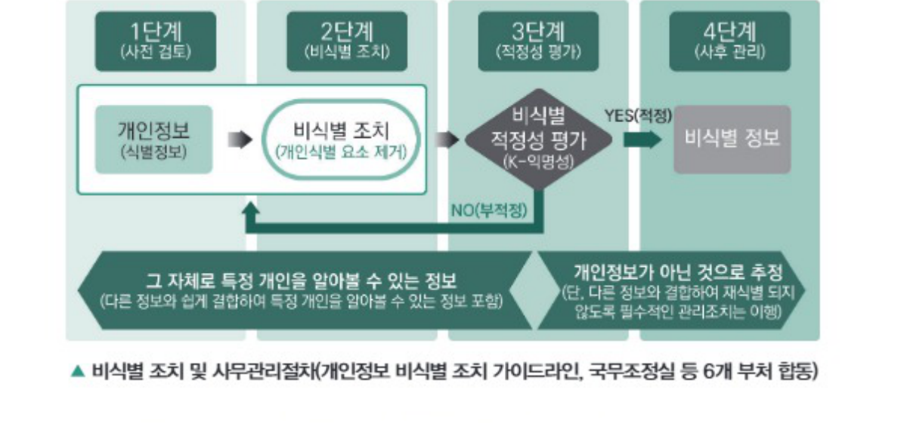
③ 개인정보 비식별화 조치 가이드라인의 단계별 조치 기준
| 단계 | 기준 |
|---|---|
| 사전 검토 | 〈개인정보 해당 여부 검토〉
|
| 비식별 조치 | 〈비식별 조치기법 적용〉
|
| 적정성 평가 | 〈k-익명성 모델 활용〉
|
| 사후 관리 | 〈비식별 정보 안전 조치〉
|
④ 개인정보 비식별화 조치 가이드라인의 조치방법
| 처리기법 | 내용 |
|---|---|
| 가명 처리 |
예 홍길동, 35세, 서울 거주, 한국대 재학 → 임꺽정, 30대, 서울 거주, 국제대 재학 |
| 총계 처리 |
예 임꺽정 180cm, 홍길동 170cm, 이콩쥐 160cm, 김팥쥐 150cm → 물리학과 학생 키 합 : 660cm, 평균 키 165cm 예 에이즈 환자 집단임을 공개하면서 특정인이 그 집단에 속함을 알 수 있도록 표시하는 행위 금지 |
| 데이터 삭제 |
예 주민등록번호 901206-1234567 → 90년대생, 남자 예 개인과 관련된 날짜정보(합격일 등)는 연단위로 처리 |
| 데이터 범주화 |
예 홍길동, 35세 → 홍씨, 30~40세 |
| 데이터 마스킹 |
예 홍길동, 35세, 서울 거주, 한국대학교 재학 → 홍○○, 35세, 서울 거주, ○○대 재학 |
- 가명 처리는 개인정보 중 주요 식별 요소를 다른 값으로 대체하는 방법이다.
- 총계 처리는 데이터의 총합 값을 보여주고 개별 값을 보여주지 않는 방법이다.
- 데이터 삭제는 개인을 식별하는데 기여할 확률이 높은 주요 식별자를 보이지 않도록 처리하는 방법이다.
- 데이터 범주화는 데이터를 범주의 값으로 변환하여 숨기는 방법이다.
- 가명 처리는 값을 대체 시 규칙이 노출되어 역으로 쉽게 식별할 수 없도록 주의해야 한다.
- 총계 처리 시 특정 속성을 지닌 개인으로 구성된 단체의 속성 정보를 공개하는 것은 그 집단에 속한 개인의 정보를 공개하는 것과 마찬가지이므로 주의해야 한다.
- 개인을 식별하는데 기여할 확률이 높은 주요 식별자를 보이지 않도록 처리하는 방법은 데이터 마스킹이며, 데이터 삭제는 데이터 공유나 개방 목적에 따라 데이터 셋에 구성된 값 중 필요 없는 값 또는 개인식별에 중요한 값을 삭제하는 방법이다.
- 데이터 범주화는 데이터의 값을 범주의 값으로 변환하여 값을 숨기는 방법이다.
07 가명정보 활용
1) 가명정보의 개요
① 가명정보의 정의
- 활용하고자 하는 개인정보의 일부를 삭제하거나 일부 또는 전부를 대체하는 등의 방법으로 처리하는 과정을 가명처리라 하며, 이 산출물을 가명정보라 한다.
- 앞서 살펴본 데이터 3법에서는 데이터 이용 활성화를 위해 가명정보 개념을 도입했으며, 개인정보 및 익명정보와 비교하면 다음과 같다.
| 구분 | 설명 | 비고 |
|---|---|---|
| 개인정보 |
| 정보주체로부터 사전에 개인정보 활용에 대한 구체적인 동의를 받은 범위 내에서 활용 가능 |
| 가명정보 | 추가 정보 없이는 특정 개인을 알아볼 수 없는 정보 | 사전에 동의 없이 통계작성(상업적 목적 포함), 과학적 연구(산업적 연구 포함), 공익적 기록 보존 목적 등으로 활용 가능 |
| 익명정보 | 특정 개인을 알아볼 수 없도록 처리한 정보 | 개인정보가 아니기에 제약 없이 활용 가능 |
② 가명처리의 필요성
- 개인정보는 특정 개인에 대한 다양한 정보들이 포함되어 있는 관계로 이를 처리 및 활용하는 과정에서 특정 개인의 사생활 침해 등 여러 문제가 발생할 수 있다.
- 개인정보를 안전하게 활용하기 위해 특정 개인에 대한 정보들이 노출되어 식별되지 않도록 기술적인 조치를 수행하여야 한다.
③ 가명처리의 목적 및 대상
- 가명정보는 통계작성, 과학적 연구, 공익적 기록 보존 등의 목적으로 개인정보처리자의 정당한 처리 범위 내에서 정보주체의 사전 동의 없이 처리할 수 있다.
| 처리목적 | 내용 |
|---|---|
| 통계 작성 |
|
| 과학적 연구 | 기술의 개발과 실증, 기초연구, 응용 연구 및 민간 투자 연구 등 과학적 방법을 적용하는 연구 |
| 공익적 기록 보존 |
|
2) 가명처리 절차
가명정보 처리자가 가명처리한 결과, 목적을 달성하기 어렵거나 재식별 가능성이 있는 경우 가명처리(3단계)를 반복하거나 부분적으로 가명처리를 추가 수행할 수 있다.
① 목적 설정 등 사전준비
- 가명정보 처리 목적을 명확하게 설정한다.
- 가명정보 처리 목적의 적합성을 검토한다.
- 계약서나 개인정보 처리지침 또는 내부 관리계획 등 필요한 서류들을 작성한다.
② 위험성 검토
| 구분 | 내용 |
|---|---|
| 대상 선정 |
|
| 위험성 검토 |
|
③ 가명처리
- 항목별 가명처리 방법과 수준을 먼저 정의하고, 이에 맞게 가명처리를 수행한다.
- 식별자와 준식별자에 대한 비식별화를 수행한다.
④ 적정성 검토
- 가명처리가 적정하게 수행되었는지 확인한다.
- 가명처리 결과가 가명정보의 처리 목적에 부합한지 검토한다.
- 필요서류, 처리 목적 정합성, 식별 위험성, 가명처리 방법 및 수준의 적정성, 가명처리의 적정성, 처리 목적 달성 가능성 단계로 검토를 수행한다.
- 프라이버시 기반 추론방지 모델을 이용하여 재식별 가능성을 확인한다.
⑤ 안전한 관리
- 생성된 가명정보를 법령에 따라 물리적, 관리적, 기술적 안전조치 등 사후관리를 이행한다(재식별 가능성 모니터링).
08 개인정보 활용
1) 데이터 수집의 위기 요인과 통제 방안
① 사생활 침해로 위기 발생
- M2M(Machine to Machine) 시대가 되면서 정보를 수집하는 센서들의 수가 증가하고 있다.
- 개인정보의 가치가 커짐에 따라 많은 사업자들이 개인정보 습득에 더 많은 자원을 투입하고 있다.
- 특정 데이터가 본래 목적 외로 가공되어 2차, 3차 목적으로 활용될 가능성이 커지고 있다.
- 위험의 범위가 사생활 침해 수준을 넘어 사회, 경제적 위협으로 더 확대될 수 있다.
② 동의에서 책임으로 강화하여 통제
- 개인정보는 본래의 1차적 목적 외에도 2차, 3차적 목적으로 가공, 유통, 활용되고 있다.
- 개인정보의 활용에 대해 개인이 매번 동의하는 것은 매우 어려운 일이며, 경제적으로도 비효율적이다.
- 개인정보 사용으로 발생하는 피해에 대해서는 개인정보 사용자가 책임을 지게 한다.
- 개인정보를 사용하는 주체가 익명화 기술 같은 더 적극적인 보호 장치를 마련하게 하는 효과가 있을 것으로 기대된다.
2) 데이터 활용의 위기 요인과 통제 방안
① 책임원칙 훼손으로 위기 발생
- 빅데이터의 분석 결과에 따라 특정한 행위를 할 가능성이 높다는 이유만으로 특정인이 처벌받는 것은 민주주의 사회 원칙을 훼손한다.
- 특정인이 특정한 사회, 경제적 특성을 가진 집단에 속한다는 이유만으로 그의 신용도와 무관하게 대출이 거절되는 상황은 잘못된 클러스터링의 피해이다.
- 특정 조건을 가진 학생이 대학에 진학하고자 할 때 잘못된 예측 알고리즘에 의해 진학할 기회 자체를 주지 않는다면 이는 사회 정의 문제와도 직결된다.
② 결과 기반 책임 원칙을 고수하여 통제
- 기존의 책임 원칙을 더 강화해야 한다.
- 예측 결과에 의해 불이익을 당할 가능성을 최소화하는 방안 마련이 필요하다.
- 제도 마련과 함께 알고리즘의 기술적 완성도를 더 높여야 한다.
3) 데이터 처리의 위기 요인과 통제 방안
① 데이터 오용으로 위기 발생
- 빅데이터는 과거에 일어났던 일로 인해 기록된 데이터에 의존한다.
- 빅데이터를 기반으로 미래를 예측하는 것은 어느 정도 정확도를 가질 수 있지만 항상 맞는 것은 아니다.
- 빅데이터 사용자가 데이터를 과신할 때 큰 문제가 발생할 가능성이 높다.
- 잘못된 지표를 사용하는 것은 오히려 과거 경험에 의존하는 것보다 더 잘못된 결론을 도출할 수 있다.
② 알고리즘 접근을 허용하여 통제
- 알고리즘에 대한 접근권한을 부여받아 직접 검증할 수 있도록 한다.
- 알고리즘에 대한 객관적인 인증방안을 마련 및 도입한다.
- 알고리즘의 부당함을 반증할 수 있는 방법을 제시해 줄 것을 요청한다.
- 공개해 준 알고리즘을 해석해 줄 알고리즈미스트와 같은 전문가를 영입한다.
- 알고리즈미스트는 만들어진 알고리즘을 분석하여 해당 알고리즘으로 부당한 피해를 보는 사람을 구제하는 역할을 수행할 수 있다.
- 알고리즈미스트는 컴퓨터, 수학, 통계학, 비즈니스 등의 다양한 지식이 필요하다.
- 데이터 수집 시 사생활 침해로 위기가 발생할 수 있으며, 사용자의 책임 강화보다는 개인의 직접 동의가 경제적이다.
- 데이터 활용 시 책임원칙 훼손으로 위기가 발생할 수 있으며, 결과 기반 책임 원칙을 고수하여 통제할 수 있다.
- 데이터 처리 시 데이터 오용으로 위기가 발생할 수 있으며, 알고리즘 접근을 허용하여 통제할 수 있다.
- 과거에 일어난 사건으로 인해 기록된 데이터는 개인정보를 포함할 수 있다.
- 개인정보의 활용에 대해 개인이 매번 동의하는 것은 어려운 일이며, 경제적으로 비효율적이므로 사용자의 책임을 강화하여 통제해야 한다.
- 개인정보의 가치가 커지면서 많은 사업자들이 개인정보 습득에 더 많은 자원을 투입하고 있다.
- 개인정보 사용으로 발생하는 피해에 대해서는 개인정보 사용 주체가 책임을 진다.
- 개인정보를 사용하는 주체는 익명화 기술과 같은 더 적극적인 보호 장치를 마련해야 한다.
- 개인정보는 본래의 1차적 목적으로만 활용되어야 하며, 가공, 유통 등을 엄격히 금지해야 한다.
- 개인정보는 법률과 규정이 정한 범위 내에서 가공하고 활용하는 것이 허용된다.
합격을 다지는 예상문제 (SECTION 02)
- 데이터 분석기술
- 데이터 수집기술
- 데이터 저장기술
- 데이터 복구기술
- MapReduce
- ETL
- HDFS
- Pre-processing
- 크롤링(Crawling)
- ETL
- Clustering
- Open API
- Split → Map → Shuffle → Reduce
- Shuffle → Map → Split → Reduce
- Map → Split → Shuffle → Reduce
- Reduce → Shuffle → Map → Split
- 데이터 처리 복잡도 증가
- 데이터 구조의 변화
- 데이터 처리의 신속성 요구
- 데이터 처리 유연성 증대
- 컴퓨팅 부하 제어
- 분석 부하 제어
- 네트워크 부하 제어
- 저장 부하 제어
- LSTM(Long Short-Term Memory)
- RNN(Recurrent Neural Network)
- K Nearest Neighborhood
- Auto-encoder
- 지도학습(Supervised Learning)
- 비지도학습(Unsupervised Learning)
- 시뮬레이션학습(Simulation Learning)
- 준지도학습(Semi-supervised Learning)
- 애노테이션(Annotation)
- 이노베이션(Innovation)
- 이벨류에이션(Evaluation)
- 애그리게이션(Aggregation)
- 생존하는 개인에 관한 정보여야 한다.
- 개인과 인격체를 갖춘 법인으로 한정한다.
- 정보의 내용이나 형태 등은 제한이 없다.
- 다른 정보와 쉽게 결합하여 개인을 알아볼 수 있는 정보도 포함한다.
- 개인정보보호법
- 정보통신망 이용촉진 및 정보보호 등에 관한 법률
- 신용정보의 이용 및 보호에 관한 법률
- 국가정보화 기본법
- 신용정보란 금융거래 등 상거래에 있어서 거래 상대방의 신용을 판단할 때 필요한 정보이다.
- 개인신용정보란 신용정보 중 개인의 신용도와 신용거래능력 등을 판단할 때 필요한 정보이다.
- 개인정보란 살아 있는 개인에 관한 정보로서 성명, 주민등록번호 및 영상 등을 통하여 개인을 알아볼 수 있는 정보이다.
- 개인식별정보란 생존하는 개인의 성명, 주소 및 주민등록번호, 여권번호, 운전면허번호, 외국인등록번호(국내거소신고번호) 및 성별, 국적 등 개인을 식별할 수 있는 정보이다.
- 데이터 이용 활성화를 위한 익명정보 개념 도입 및 데이터간 결합 근거를 마련하였다.
- 개인정보보호 관련 법률의 유사, 중복된 규정을 정비 및 거버넌스 체계 효율화를 이루었다.
- 데이터 활용에 따른 개인정보처리자 책임을 강화하였다.
- 다소 모호했던 개인정보의 판단기준을 명확하게 하였다.
- 일반법과 특별법이 저촉되면 특별법이 먼저 적용된다.
- 특별법에 규정이 없는 사항에 대해서는 일반법이 적용된다.
- 개인정보보호법은 데이터 기본 3법 중 특별법에 해당한다.
- 법률이 상호 모순되거나 저촉되는 경우 신법이 구법에 우선한다.
- 관리자의 동의를 구한 후 재식별 정보를 계속 이용한다.
- 데이터 수집 과정에서 재식별된 개인정보를 관리자의 승인을 받아 사용한다.
- 개인정보가 재식별된 경우 즉시 파기 또는 추가적인 비식별화 조치를 취하여야 한다.
- 데이터 처리 과정에서 획득한 개인정보는 스스로 사용할 수 있다.
- 비식별 조치 → 적정성 평가 → 사전검토 → 사후관리
- 사전검토 → 비식별 조치 → 적정성 평가 → 사후관리
- 적정성 평가 → 사전검토 → 비식별 조치 → 사후관리
- 사전검토 → 적정성 평가 → 비식별 조치 → 사후관리
- 비식별화
- 미식별화
- 균질화
- 정제화
- 가명처리
- 데이터 삭제
- 데이터 범주화
- 데이터 표본화
- 데이터의 오용
- 자본주의의 심화
- 사생활의 침해
- 책임 원칙의 훼손
- 가명화
- 일반화
- 정규화
- 익명화
합격을 다지는 예상문제 정답 & 해설 (SECTION 02)
빅데이터 플랫폼의 요소기술에는 데이터 생성기술, 수집기술, 저장기술, 공유기술, 처리기술, 분석기술, 시각화 기술이 있다.
ETL(Extract, Transform, Load) : 원천 데이터로부터 필요한 데이터를 추출하여 적재하고자 하는 데이터 웨어하우스에 맞게 변환하여 적재하는 과정
데이터 수집기술에는 크롤링(Crawling), 로그 수집기, 센서 네트워크, RSS Reader/Open API, ETL 등이 있다.
오답 피하기 · Clustering은 데이터 분석기술이다.
맵리듀스의 데이터 처리과정은 데이터 분할(Split), 맵(Map) 처리, 셔플(Shuffle), 리듀스(Reduce) 단계로 이어진다.
빅데이터 플랫폼의 등장배경은 비즈니스 요구사항 변화, 데이터 처리 복잡도 증가, 데이터 규모 증가, 데이터 구조의 변화, 데이터 분석 유연성 증대, 데이터 처리의 신속성 요구 등이 있다.
빅데이터 플랫폼의 부하 제어 기능으로는 컴퓨팅 부하 제어, 저장 부하 제어, 네트워크 부하 제어가 있다.
딥러닝 분석 기법으로는 CNN, RNN, LSTM, Auto-encoder 등이 있다.
오답 피하기 · KNN은 머신러닝 알고리즘이다.
기계학습의 종류로는 지도학습, 비지도학습, 준지도학습, 강화학습(Reinforcement Learning)이 있다.
데이터상의 주석 작업으로 딥러닝과 같은 학습 알고리즘이 무엇을 학습하여야 하는지 알려 주는 표식 작업을 애노테이션(annotation)이라 한다.
개인정보의 판단기준은 생존하는 개인에 관한 정보여야 하고, 정보의 내용이나 형태 등은 제한이 없으며, 개인을 알아볼 수 있는 정보여야 하고, 다른 정보와 쉽게 결합하여 개인을 알아볼 수 있는 정보도 포함한다.
빅데이터를 활용하기 위한 데이터 기본 3법으로는 개인정보보호법, 정보통신망 이용촉진 및 정보보호 등에 관한 법률, 신용정보의 이용 및 보호에 관한 법률이 있다.
개인정보보호법의 개인정보 범위에서는 개인정보를 살아 있는 개인에 관한 정보로서 성명, 주민등록번호 및 영상 등을 통하여 개인을 알아볼 수 있는 정보라 정의하고 있다. 이는 개인정보보호법에 정의된 용어로는 옳은 내용이지만, 신용정보의 이용 및 보호에 관한 법률에서 직접적으로 다루는 내용은 아니므로 주의한다.
데이터 이용 활성화를 위한 가명정보 개념을 도입하였다.
개인정보보호법은 데이터 기본 3법 중 일반법에 해당한다.
비식별화된 개인정보가 재식별된 경우 즉시 파기하거나 추가적인 비식별화 조치를 하여야 한다.
개인정보 비식별화 조치 가이드라인에서는 개인정보 비식별화 절차로 사전검토, 비식별 조치, 적정성 평가, 사후관리 4단계를 제시하고 있다.
개인으로 인식될 수 있는 가능성을 가진 데이터를 식별하기 어려운 형태로 가공하는 과정을 비식별화라고 한다.
개인정보 비식별화 조치 가이드라인에서 제시하고 있는 비식별화 방법은 가명처리, 총계처리, 데이터 삭제, 데이터 범주화, 데이터 마스킹 방법이 있다.
빅데이터를 활용함에 있어 발생할 수 있는 위기 요인으로는 사생활의 침해, 책임 원칙의 훼손, 데이터의 오용 등이 있다.
익명화(Anonymization)는 사생활 침해를 방지하기 위하여 데이터에 포함된 개인정보를 삭제하거나 알아볼 수 없는 형태로 변환하는 방법이다.